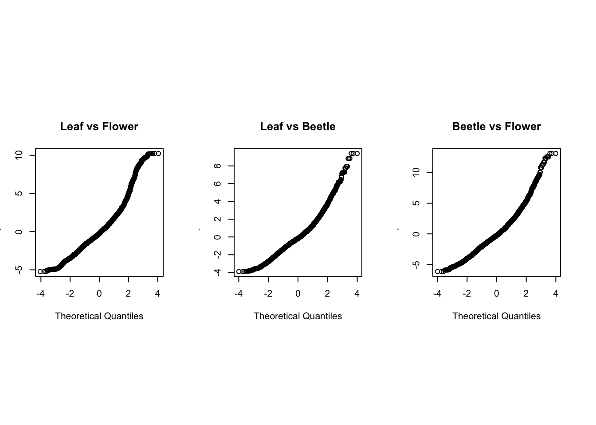
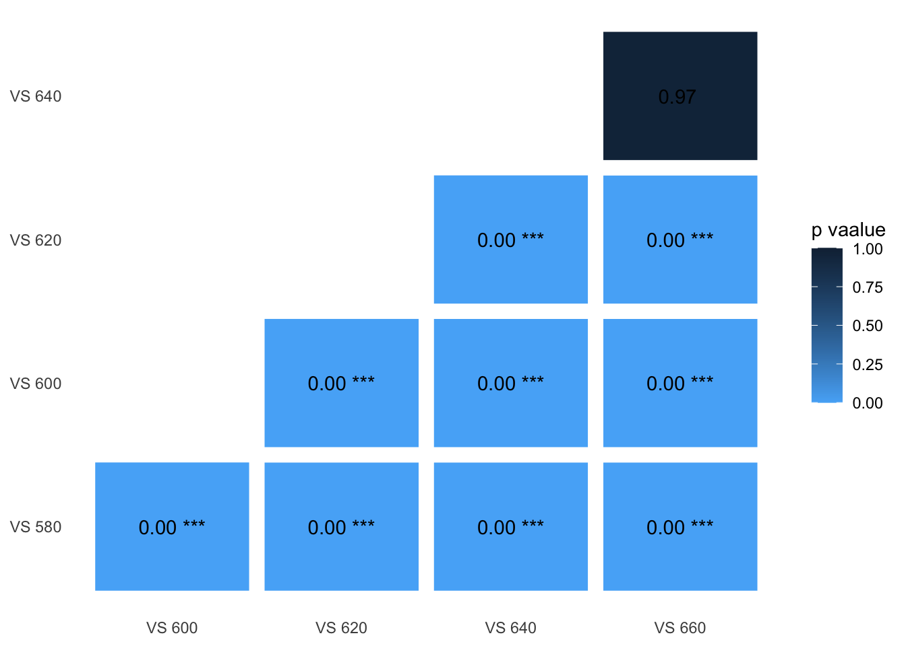
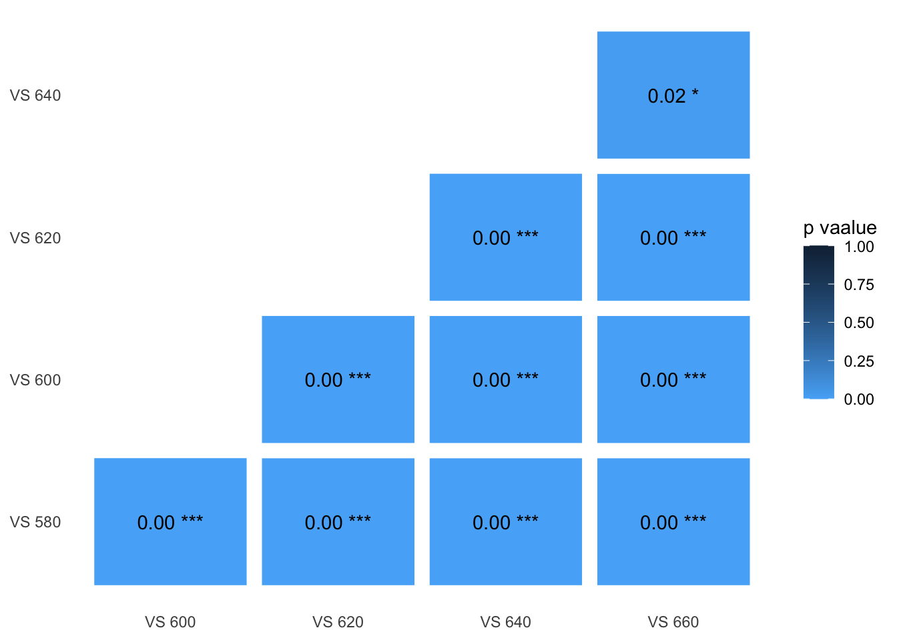
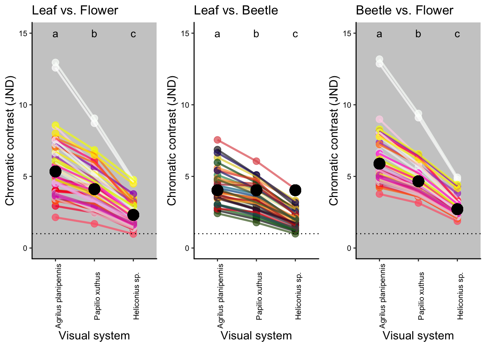
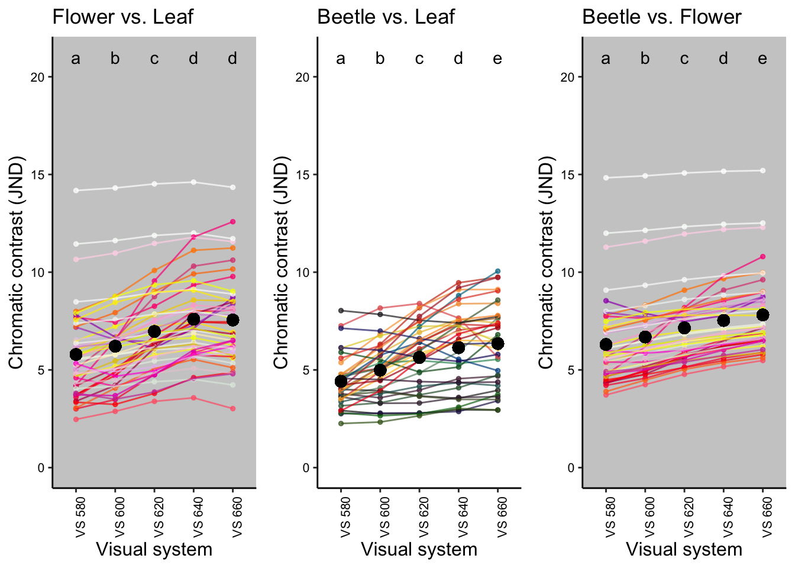

Sensitivity analysis
Supplementary Information
The aim
To test whether the modelling results were sensitive to the photoreceptor ratios used, we repeated these analyses using published ratios that represent the known variation in insects. Specifically, we compared the changes in contrast when shifting the LWS peak from 580 nm to 660 nm between tetrachomat visual systems with different photoreceptor ratios.
We applied the same modelling method described in the Main models but using ratios of different insects, including the jewel beetle, Agrilus planipennis (same as the ratio used in the main text; 1.14: 1: 1.26: 1.38; UVS: SWS: MWS: LWS), and two butterflies, Papilio Xuthus (1: 1: 4.08: 2.92) and Heliconius sp. type III (1.00: 1.44: 2.22: 11.11).
The model parameters and the statistical methods remain the same as described in main text of the paper.
library(pavo)
library(dplyr)
library(stringr)
library(tidyr) #for gather() function
library(ggplot2)
library(lme4)
library(car)
library(multcomp)
library(boot) #for mean() function
library(pander) #for creating tidy tables
library(ggpubr) #for ggarrange() function
Figure caption: VS 580 to VS 660 were used for the sensitivity analysis
Data description
We used the same spectral data and daylight illumination described in the Main models section.
Run the visual models
We created 3 different visual systems using different receptor ratios from 3 insect species (UVS, SWS, MWS, LWS):
Agrilus planipennis: 1.14, 1, 1.26, 1.38
Papilio xuthus: 1, 1, 4.08, 2.92
Heliconius sp. type III : 1, 1.44, 2.22, 11.11
We ran the visual models with the same parameter settings and steps as in the Main models.
We first calculated the quantum catches, then calculated the contrasts.
#Quantum catch calculation
#Quantum catch - D65 - Visual model 2
#shared between 3 species
buprest580=vismodel(dataset[1:501,], visual = specsensbuprest.model2[, 1:5], bkg=aveleaf$aveleaf, illum = irradiance.d65[1:501,2], qcatch = 'fi', relative=FALSE, vonkries=TRUE)
buprest600=vismodel(dataset[1:501,], visual = specsensbuprest.model2[, c(1,2,3,4,6)], bkg=aveleaf$aveleaf, illum = irradiance.d65[1:501,2], qcatch = 'fi', relative=FALSE, vonkries=TRUE)
buprest620=vismodel(dataset[1:501,], visual = specsensbuprest.model2[, c(1,2,3,4,7)], bkg=aveleaf$aveleaf, illum = irradiance.d65[1:501,2], qcatch = 'fi', relative=FALSE, vonkries=TRUE)
buprest640=vismodel(dataset[1:501,], visual = specsensbuprest.model2[, c(1,2,3,4,8)], bkg=aveleaf$aveleaf, illum = irradiance.d65[1:501,2], qcatch = 'fi', relative=FALSE, vonkries=TRUE)
buprest660=vismodel(dataset[1:501,], visual = specsensbuprest.model2[, c(1,2,3,4,9)], bkg=aveleaf$aveleaf, illum = irradiance.d65[1:501,2], qcatch = 'fi', relative=FALSE, vonkries=TRUE)
##Second: Contrast calculation
#Contrast calculation- D65 - Visual model 2
#for Agrilus planipennis
Cbuprest580 = coldist(buprest580, noise="neural", achro=FALSE, n = c(1.14,1,1.26,1.38), weber = 0.1, weber.ref = 4)
Cbuprest600 = coldist(buprest600, noise="neural", achro=FALSE, n = c(1.14,1,1.26,1.38), weber = 0.1, weber.ref = 4)
Cbuprest620 = coldist(buprest620, noise="neural", achro=FALSE, n = c(1.14,1,1.26,1.38), weber = 0.1, weber.ref = 4)
Cbuprest640 = coldist(buprest640, noise="neural", achro=FALSE, n = c(1.14,1,1.26,1.38), weber = 0.1, weber.ref = 4)
Cbuprest660 = coldist(buprest660, noise="neural", achro=FALSE, n = c(1.14,1,1.26,1.38), weber = 0.1, weber.ref = 4)
#for Papilio xuthus
Cpapilio580 = coldist(buprest580, noise="neural", achro=FALSE, n = c(1, 1, 4.08, 2.92), weber = 0.1, weber.ref = 4)
Cpapilio600 = coldist(buprest600, noise="neural", achro=FALSE, n = c(1, 1, 4.08, 2.92), weber = 0.1, weber.ref = 4)
Cpapilio620 = coldist(buprest620, noise="neural", achro=FALSE, n = c(1, 1, 4.08, 2.92), weber = 0.1, weber.ref = 4)
Cpapilio640 = coldist(buprest640, noise="neural", achro=FALSE, n = c(1, 1, 4.08, 2.92), weber = 0.1, weber.ref = 4)
Cpapilio660 = coldist(buprest660, noise="neural", achro=FALSE, n = c(1, 1, 4.08, 2.92), weber = 0.1, weber.ref = 4)
#for Heliconius sp
Cheliconius580 = coldist(buprest580, noise="neural", achro=FALSE, n = c(1, 1.44, 2.22, 11.11), weber = 0.1, weber.ref = 4)
Cheliconius600 = coldist(buprest600, noise="neural", achro=FALSE, n = c(1, 1.44, 2.22, 11.11), weber = 0.1, weber.ref = 4)
Cheliconius620 = coldist(buprest620, noise="neural", achro=FALSE, n = c(1, 1.44, 2.22, 11.11), weber = 0.1, weber.ref = 4)
Cheliconius640 = coldist(buprest640, noise="neural", achro=FALSE, n = c(1, 1.44, 2.22, 11.11), weber = 0.1, weber.ref = 4)
Cheliconius660 = coldist(buprest660, noise="neural", achro=FALSE, n = c(1, 1.44, 2.22, 11.11), weber = 0.1, weber.ref = 4)Compare contrast
#create different comparison groups for furthur GLMM analysis
#Organize data before GLMM
#for Agrilus planipennis
##flower vs leaf
Cbuprest580.flower.vs.leaf=
Cbuprest580 %>%filter(str_detect(patch1, "flower")) %>% filter(str_detect(patch2, "leaves"))
Cbuprest600.flower.vs.leaf=
Cbuprest600 %>%filter(str_detect(patch1, "flower")) %>% filter(str_detect(patch2, "leaves"))
Cbuprest620.flower.vs.leaf=
Cbuprest620 %>%filter(str_detect(patch1, "flower")) %>% filter(str_detect(patch2, "leaves"))
Cbuprest640.flower.vs.leaf=
Cbuprest640 %>%filter(str_detect(patch1, "flower")) %>% filter(str_detect(patch2, "leaves"))
Cbuprest660.flower.vs.leaf=
Cbuprest660 %>%filter(str_detect(patch1, "flower")) %>% filter(str_detect(patch2, "leaves"))
Cbuprest.flower.vs.leaf=
Cbuprest580.flower.vs.leaf %>% rbind(Cbuprest600.flower.vs.leaf) %>%
rbind(Cbuprest620.flower.vs.leaf)%>% rbind(Cbuprest640.flower.vs.leaf) %>% rbind(Cbuprest660.flower.vs.leaf)
bup580.flower.vs.leaf<-Cbuprest580.flower.vs.leaf[,3]
bup600.flower.vs.leaf<-Cbuprest600.flower.vs.leaf[,3]
bup620.flower.vs.leaf<-Cbuprest620.flower.vs.leaf[,3]
bup640.flower.vs.leaf<-Cbuprest640.flower.vs.leaf[,3]
bup660.flower.vs.leaf<-Cbuprest660.flower.vs.leaf[,3]
com.bupcontrast.flower.vs.leaf<-cbind(Cbuprest.flower.vs.leaf[,1:2],bup580.flower.vs.leaf,bup600.flower.vs.leaf,bup620.flower.vs.leaf,bup640.flower.vs.leaf,bup660.flower.vs.leaf)
compare.flower.vs.leaf.bup <- com.bupcontrast.flower.vs.leaf %>%
gather(key = "peak_wl.flower.vs.leaf", value = "dS", 3:7)
##beetle vs leaf
Cbuprest580.beetle.vs.leaf=
Cbuprest580 %>%filter(str_detect(patch1, "leaves")) %>% filter(str_detect(patch2, "beetle"))
Cbuprest600.beetle.vs.leaf=
Cbuprest600 %>%filter(str_detect(patch1, "leaves")) %>% filter(str_detect(patch2, "beetle"))
Cbuprest620.beetle.vs.leaf=
Cbuprest620 %>%filter(str_detect(patch1, "leaves")) %>% filter(str_detect(patch2, "beetle"))
Cbuprest640.beetle.vs.leaf=
Cbuprest640 %>%filter(str_detect(patch1, "leaves")) %>% filter(str_detect(patch2, "beetle"))
Cbuprest660.beetle.vs.leaf=
Cbuprest660 %>%filter(str_detect(patch1, "leaves")) %>% filter(str_detect(patch2, "beetle"))
Cbuprest.beetle.vs.leaf=
Cbuprest580.beetle.vs.leaf %>% rbind(Cbuprest600.beetle.vs.leaf)%>%
rbind(Cbuprest620.beetle.vs.leaf)%>% rbind(Cbuprest640.beetle.vs.leaf) %>% rbind(Cbuprest660.beetle.vs.leaf)
bup580.beetle.vs.leaf<-Cbuprest580.beetle.vs.leaf[,3]
bup600.beetle.vs.leaf<-Cbuprest600.beetle.vs.leaf[,3]
bup620.beetle.vs.leaf<-Cbuprest620.beetle.vs.leaf[,3]
bup640.beetle.vs.leaf<-Cbuprest640.beetle.vs.leaf[,3]
bup660.beetle.vs.leaf<-Cbuprest660.beetle.vs.leaf[,3]
com.bupcontrast.beetle.vs.leaf<-cbind(Cbuprest.beetle.vs.leaf[,1:2],bup580.beetle.vs.leaf,bup600.beetle.vs.leaf,bup620.beetle.vs.leaf,bup640.beetle.vs.leaf,bup660.beetle.vs.leaf)
compare.beetle.vs.leaf.bup <- com.bupcontrast.beetle.vs.leaf %>%
gather(key = "peak_wl.beetle.vs.leaf", value = "dS", 3:7)
##beetle vs flower
Cbuprest580.beetle.vs.flower=
Cbuprest580 %>%filter(str_detect(patch1, "flower")) %>% filter(str_detect(patch2, "beetle"))
Cbuprest600.beetle.vs.flower=
Cbuprest600 %>%filter(str_detect(patch1, "flower")) %>% filter(str_detect(patch2, "beetle"))
Cbuprest620.beetle.vs.flower=
Cbuprest620 %>%filter(str_detect(patch1, "flower")) %>% filter(str_detect(patch2, "beetle"))
Cbuprest640.beetle.vs.flower=
Cbuprest640 %>%filter(str_detect(patch1, "flower")) %>% filter(str_detect(patch2, "beetle"))
Cbuprest660.beetle.vs.flower=
Cbuprest660 %>%filter(str_detect(patch1, "flower")) %>% filter(str_detect(patch2, "beetle"))
Cbuprest.beetle.vs.flower=
Cbuprest580.beetle.vs.flower %>% rbind(Cbuprest600.beetle.vs.flower) %>%
rbind(Cbuprest620.beetle.vs.flower)%>% rbind(Cbuprest640.beetle.vs.flower) %>%
rbind(Cbuprest660.beetle.vs.flower)
bup580.beetle.vs.flower<-Cbuprest580.beetle.vs.flower[,3]
bup600.beetle.vs.flower<-Cbuprest600.beetle.vs.flower[,3]
bup620.beetle.vs.flower<-Cbuprest620.beetle.vs.flower[,3]
bup640.beetle.vs.flower<-Cbuprest640.beetle.vs.flower[,3]
bup660.beetle.vs.flower<-Cbuprest660.beetle.vs.flower[,3]
com.bupcontrast.beetle.vs.flower<-cbind(Cbuprest.beetle.vs.flower[,1:2],bup580.beetle.vs.flower,bup600.beetle.vs.flower,bup620.beetle.vs.flower,bup640.beetle.vs.flower,bup660.beetle.vs.flower)
compare.beetle.vs.flower.bup <- com.bupcontrast.beetle.vs.flower %>%
gather(key = "peak_wl.beetle.vs.flower", value = "dS", 3:7)
#for Papilio xuthus
##flower vs leaf
Cpapilio580.flower.vs.leaf=
Cpapilio580 %>%filter(str_detect(patch1, "flower")) %>% filter(str_detect(patch2, "leaves"))
Cpapilio600.flower.vs.leaf=
Cpapilio600 %>%filter(str_detect(patch1, "flower")) %>% filter(str_detect(patch2, "leaves"))
Cpapilio620.flower.vs.leaf=
Cpapilio620 %>%filter(str_detect(patch1, "flower")) %>% filter(str_detect(patch2, "leaves"))
Cpapilio640.flower.vs.leaf=
Cpapilio640 %>%filter(str_detect(patch1, "flower")) %>% filter(str_detect(patch2, "leaves"))
Cpapilio660.flower.vs.leaf=
Cpapilio660 %>%filter(str_detect(patch1, "flower")) %>% filter(str_detect(patch2, "leaves"))
Cpapilio.flower.vs.leaf=
Cpapilio580.flower.vs.leaf %>% rbind(Cpapilio600.flower.vs.leaf) %>%
rbind(Cpapilio620.flower.vs.leaf)%>% rbind(Cpapilio640.flower.vs.leaf) %>% rbind(Cpapilio660.flower.vs.leaf)
pap580.flower.vs.leaf<-Cpapilio580.flower.vs.leaf[,3]
pap600.flower.vs.leaf<-Cpapilio600.flower.vs.leaf[,3]
pap620.flower.vs.leaf<-Cpapilio620.flower.vs.leaf[,3]
pap640.flower.vs.leaf<-Cpapilio640.flower.vs.leaf[,3]
pap660.flower.vs.leaf<-Cpapilio660.flower.vs.leaf[,3]
com.papcontrast.flower.vs.leaf<-cbind(Cpapilio.flower.vs.leaf[,1:2],pap580.flower.vs.leaf,pap600.flower.vs.leaf,pap620.flower.vs.leaf,pap640.flower.vs.leaf,pap660.flower.vs.leaf)
compare.flower.vs.leaf.pap <- com.papcontrast.flower.vs.leaf %>%
gather(key = "peak_wl.flower.vs.leaf", value = "dS", 3:7)
##beetle vs leaf
Cpapilio580.beetle.vs.leaf=
Cpapilio580 %>%filter(str_detect(patch1, "leaves")) %>% filter(str_detect(patch2, "beetle"))
Cpapilio600.beetle.vs.leaf=
Cpapilio600 %>%filter(str_detect(patch1, "leaves")) %>% filter(str_detect(patch2, "beetle"))
Cpapilio620.beetle.vs.leaf=
Cpapilio620 %>%filter(str_detect(patch1, "leaves")) %>% filter(str_detect(patch2, "beetle"))
Cpapilio640.beetle.vs.leaf=
Cpapilio640 %>%filter(str_detect(patch1, "leaves")) %>% filter(str_detect(patch2, "beetle"))
Cpapilio660.beetle.vs.leaf=
Cpapilio660 %>%filter(str_detect(patch1, "leaves")) %>% filter(str_detect(patch2, "beetle"))
Cpapilio.beetle.vs.leaf=
Cpapilio580.beetle.vs.leaf %>% rbind(Cpapilio600.beetle.vs.leaf)%>%
rbind(Cpapilio620.beetle.vs.leaf)%>% rbind(Cpapilio640.beetle.vs.leaf) %>% rbind(Cpapilio660.beetle.vs.leaf)
pap580.beetle.vs.leaf<-Cpapilio580.beetle.vs.leaf[,3]
pap600.beetle.vs.leaf<-Cpapilio600.beetle.vs.leaf[,3]
pap620.beetle.vs.leaf<-Cpapilio620.beetle.vs.leaf[,3]
pap640.beetle.vs.leaf<-Cpapilio640.beetle.vs.leaf[,3]
pap660.beetle.vs.leaf<-Cpapilio660.beetle.vs.leaf[,3]
com.papcontrast.beetle.vs.leaf<-cbind(Cpapilio.beetle.vs.leaf[,1:2],pap580.beetle.vs.leaf,pap600.beetle.vs.leaf,pap620.beetle.vs.leaf,pap640.beetle.vs.leaf,pap660.beetle.vs.leaf)
compare.beetle.vs.leaf.pap <- com.papcontrast.beetle.vs.leaf %>%
gather(key = "peak_wl.beetle.vs.leaf", value = "dS", 3:7)
##beetle vs flower
Cpapilio580.beetle.vs.flower=
Cpapilio580 %>%filter(str_detect(patch1, "flower")) %>% filter(str_detect(patch2, "beetle"))
Cpapilio600.beetle.vs.flower=
Cpapilio600 %>%filter(str_detect(patch1, "flower")) %>% filter(str_detect(patch2, "beetle"))
Cpapilio620.beetle.vs.flower=
Cpapilio620 %>%filter(str_detect(patch1, "flower")) %>% filter(str_detect(patch2, "beetle"))
Cpapilio640.beetle.vs.flower=
Cpapilio640 %>%filter(str_detect(patch1, "flower")) %>% filter(str_detect(patch2, "beetle"))
Cpapilio660.beetle.vs.flower=
Cpapilio660 %>%filter(str_detect(patch1, "flower")) %>% filter(str_detect(patch2, "beetle"))
Cpapilio.beetle.vs.flower=
Cpapilio580.beetle.vs.flower %>% rbind(Cpapilio600.beetle.vs.flower) %>%
rbind(Cpapilio620.beetle.vs.flower)%>% rbind(Cpapilio640.beetle.vs.flower) %>%
rbind(Cpapilio660.beetle.vs.flower)
pap580.beetle.vs.flower<-Cpapilio580.beetle.vs.flower[,3]
pap600.beetle.vs.flower<-Cpapilio600.beetle.vs.flower[,3]
pap620.beetle.vs.flower<-Cpapilio620.beetle.vs.flower[,3]
pap640.beetle.vs.flower<-Cpapilio640.beetle.vs.flower[,3]
pap660.beetle.vs.flower<-Cpapilio660.beetle.vs.flower[,3]
com.papcontrast.beetle.vs.flower<-cbind(Cpapilio.beetle.vs.flower[,1:2],pap580.beetle.vs.flower,pap600.beetle.vs.flower,pap620.beetle.vs.flower,pap640.beetle.vs.flower,pap660.beetle.vs.flower)
compare.beetle.vs.flower.pap <- com.papcontrast.beetle.vs.flower %>%
gather(key = "peak_wl.beetle.vs.flower", value = "dS", 3:7)
#for Heliconius sp
##flower vs leaf
Cheliconius580.flower.vs.leaf=
Cheliconius580 %>%filter(str_detect(patch1, "flower")) %>% filter(str_detect(patch2, "leaves"))
Cheliconius600.flower.vs.leaf=
Cheliconius600 %>%filter(str_detect(patch1, "flower")) %>% filter(str_detect(patch2, "leaves"))
Cheliconius620.flower.vs.leaf=
Cheliconius620 %>%filter(str_detect(patch1, "flower")) %>% filter(str_detect(patch2, "leaves"))
Cheliconius640.flower.vs.leaf=
Cheliconius640 %>%filter(str_detect(patch1, "flower")) %>% filter(str_detect(patch2, "leaves"))
Cheliconius660.flower.vs.leaf=
Cheliconius660 %>%filter(str_detect(patch1, "flower")) %>% filter(str_detect(patch2, "leaves"))
Cheliconius.flower.vs.leaf=
Cheliconius580.flower.vs.leaf %>% rbind(Cheliconius600.flower.vs.leaf) %>%
rbind(Cheliconius620.flower.vs.leaf)%>% rbind(Cheliconius640.flower.vs.leaf) %>% rbind(Cheliconius660.flower.vs.leaf)
heli580.flower.vs.leaf<-Cheliconius580.flower.vs.leaf[,3]
heli600.flower.vs.leaf<-Cheliconius600.flower.vs.leaf[,3]
heli620.flower.vs.leaf<-Cheliconius620.flower.vs.leaf[,3]
heli640.flower.vs.leaf<-Cheliconius640.flower.vs.leaf[,3]
heli660.flower.vs.leaf<-Cheliconius660.flower.vs.leaf[,3]
com.helicontrast.flower.vs.leaf<-cbind(Cheliconius.flower.vs.leaf[,1:2],heli580.flower.vs.leaf,heli600.flower.vs.leaf,heli620.flower.vs.leaf,heli640.flower.vs.leaf,heli660.flower.vs.leaf)
compare.flower.vs.leaf.heli <- com.helicontrast.flower.vs.leaf %>%
gather(key = "peak_wl.flower.vs.leaf", value = "dS", 3:7)
##beetle vs leaf
Cheliconius580.beetle.vs.leaf=
Cheliconius580 %>%filter(str_detect(patch1, "leaves")) %>% filter(str_detect(patch2, "beetle"))
Cheliconius600.beetle.vs.leaf=
Cheliconius600 %>%filter(str_detect(patch1, "leaves")) %>% filter(str_detect(patch2, "beetle"))
Cheliconius620.beetle.vs.leaf=
Cheliconius620 %>%filter(str_detect(patch1, "leaves")) %>% filter(str_detect(patch2, "beetle"))
Cheliconius640.beetle.vs.leaf=
Cheliconius640 %>%filter(str_detect(patch1, "leaves")) %>% filter(str_detect(patch2, "beetle"))
Cheliconius660.beetle.vs.leaf=
Cheliconius660 %>%filter(str_detect(patch1, "leaves")) %>% filter(str_detect(patch2, "beetle"))
Cheliconius.beetle.vs.leaf=
Cheliconius580.beetle.vs.leaf %>% rbind(Cheliconius600.beetle.vs.leaf)%>%
rbind(Cheliconius620.beetle.vs.leaf)%>% rbind(Cheliconius640.beetle.vs.leaf) %>% rbind(Cheliconius660.beetle.vs.leaf)
heli580.beetle.vs.leaf<-Cheliconius580.beetle.vs.leaf[,3]
heli600.beetle.vs.leaf<-Cheliconius600.beetle.vs.leaf[,3]
heli620.beetle.vs.leaf<-Cheliconius620.beetle.vs.leaf[,3]
heli640.beetle.vs.leaf<-Cheliconius640.beetle.vs.leaf[,3]
heli660.beetle.vs.leaf<-Cheliconius660.beetle.vs.leaf[,3]
com.helicontrast.beetle.vs.leaf<-cbind(Cheliconius.beetle.vs.leaf[,1:2],heli580.beetle.vs.leaf,heli600.beetle.vs.leaf,heli620.beetle.vs.leaf,heli640.beetle.vs.leaf,heli660.beetle.vs.leaf)
compare.beetle.vs.leaf.heli <- com.helicontrast.beetle.vs.leaf %>%
gather(key = "peak_wl.beetle.vs.leaf", value = "dS", 3:7)
##beetle vs flower
Cheliconius580.beetle.vs.flower=
Cheliconius580 %>%filter(str_detect(patch1, "flower")) %>% filter(str_detect(patch2, "beetle"))
Cheliconius600.beetle.vs.flower=
Cheliconius600 %>%filter(str_detect(patch1, "flower")) %>% filter(str_detect(patch2, "beetle"))
Cheliconius620.beetle.vs.flower=
Cheliconius620 %>%filter(str_detect(patch1, "flower")) %>% filter(str_detect(patch2, "beetle"))
Cheliconius640.beetle.vs.flower=
Cheliconius640 %>%filter(str_detect(patch1, "flower")) %>% filter(str_detect(patch2, "beetle"))
Cheliconius660.beetle.vs.flower=
Cheliconius660 %>%filter(str_detect(patch1, "flower")) %>% filter(str_detect(patch2, "beetle"))
Cheliconius.beetle.vs.flower=
Cheliconius580.beetle.vs.flower %>% rbind(Cheliconius600.beetle.vs.flower) %>%
rbind(Cheliconius620.beetle.vs.flower)%>% rbind(Cheliconius640.beetle.vs.flower) %>%
rbind(Cheliconius660.beetle.vs.flower)
heli580.beetle.vs.flower<-Cheliconius580.beetle.vs.flower[,3]
heli600.beetle.vs.flower<-Cheliconius600.beetle.vs.flower[,3]
heli620.beetle.vs.flower<-Cheliconius620.beetle.vs.flower[,3]
heli640.beetle.vs.flower<-Cheliconius640.beetle.vs.flower[,3]
heli660.beetle.vs.flower<-Cheliconius660.beetle.vs.flower[,3]
com.helicontrast.beetle.vs.flower<-cbind(Cheliconius.beetle.vs.flower[,1:2],heli580.beetle.vs.flower,heli600.beetle.vs.flower,heli620.beetle.vs.flower,heli640.beetle.vs.flower,heli660.beetle.vs.flower)
compare.beetle.vs.flower.heli <- com.helicontrast.beetle.vs.flower%>%
gather(key = "peak_wl.beetle.vs.flower", value = "dS", 3:7)
Click the tabs to see the results for each comparison group ( Flower vs. Leaf / Beetle vs. Leaf / Beetle vs. Flower) in 3 different speceis (Agrilus planipennis / Papilio xuthus / Heliconius sp).
#for Agrilus planipennis
##Flower vs Leaf
m.flower.vs.leaf.bup <- lmer(dS~peak_wl.flower.vs.leaf + (1|patch2) + (1|patch1), data = compare.flower.vs.leaf.bup,REML=F)
sum.flower.vs.leaf.bup <- summary(glht(m.flower.vs.leaf.bup, linfct = mcp(peak_wl.flower.vs.leaf = "Tukey")), test = adjusted("bonferroni"))
##Beetle vs Leaf
m.beetle.vs.leaf.bup <- lmer(dS~peak_wl.beetle.vs.leaf + (1|patch2) + (1|patch1), data = compare.beetle.vs.leaf.bup,REML=F)
sum.beetle.vs.leaf.bup <- summary(glht(m.beetle.vs.leaf.bup, linfct = mcp(peak_wl.beetle.vs.leaf = "Tukey")), test = adjusted("bonferroni"))
##Beetle vs Flower
m.beetle.vs.flower.bup <- lmer(dS~peak_wl.beetle.vs.flower + (1|patch2) + (1|patch1), data = compare.beetle.vs.flower.bup,REML=F)
sum.beetle.vs.flower.bup <- summary(glht(m.beetle.vs.flower.bup, linfct = mcp(peak_wl.beetle.vs.flower = "Tukey")), test = adjusted("bonferroni"))
###reshape data for heatmap
p1.bup<-sum.flower.vs.leaf.bup[["test"]][["pvalues"]]
p2.bup<-sum.beetle.vs.leaf.bup[["test"]][["pvalues"]]
p3.bup<-sum.beetle.vs.flower.bup[["test"]][["pvalues"]]
VislistA.bup<-c("VS 600","VS 620","VS 640","VS 660","VS 620","VS 640","VS 660","VS 640","VS 660","VS 660")
VislistB.bup<-c("VS 580","VS 580","VS 580","VS 580","VS 600","VS 600","VS 600","VS 620","VS 620","VS 640")
heat.bup<-data.frame(names(p1.bup),as.numeric(str_extract(p1.bup,"([0-9]+).*$"))) %>%
cbind(as.numeric(str_extract(p2.bup,"([0-9]+).*$"))) %>%
cbind(as.numeric(str_extract(p3.bup,"([0-9]+).*$"))) %>%
dplyr:: rename(orignial.list = 1, flower.vs.leaf = 2, beetle.vs.leaf = 3, beetle.vs.flower = 4) %>%
cbind(VislistA.bup) %>%
cbind(VislistB.bup) %>%
dplyr::select(-orignial.list)
##add asterisks for significant pairs
heat.bup$sig.flower.vs.leaf[heat.bup$flower.vs.leaf > 0.05] <- ""
heat.bup$sig.flower.vs.leaf[heat.bup$flower.vs.leaf < 0.05] <- "*"
heat.bup$sig.flower.vs.leaf[heat.bup$flower.vs.leaf < 0.01] <- "**"
heat.bup$sig.flower.vs.leaf[heat.bup$flower.vs.leaf < 0.0001] <- "***"
heat.bup$sig.beetle.vs.leaf[heat.bup$beetle.vs.leaf > 0.05] <- ""
heat.bup$sig.beetle.vs.leaf[heat.bup$beetle.vs.leaf < 0.05] <- "*"
heat.bup$sig.beetle.vs.leaf[heat.bup$beetle.vs.leaf < 0.01] <- "**"
heat.bup$sig.beetle.vs.leaf[heat.bup$beetle.vs.leaf < 0.0001] <- "***"
heat.bup$sig.beetle.vs.flower[heat.bup$beetle.vs.flower > 0.05] <- ""
heat.bup$sig.beetle.vs.flower[heat.bup$beetle.vs.flower < 0.05] <- "*"
heat.bup$sig.beetle.vs.flower[heat.bup$beetle.vs.flower < 0.01] <- "**"
heat.bup$sig.beetle.vs.flower[heat.bup$beetle.vs.flower < 0.0001] <- "***"
#for Papilio xuthus
##Flower vs Leaf
m.flower.vs.leaf.pap <- lmer(dS~peak_wl.flower.vs.leaf + (1|patch2) + (1|patch1), data = compare.flower.vs.leaf.pap,REML=F)
sum.flower.vs.leaf.pap <- summary(glht(m.flower.vs.leaf.pap, linfct = mcp(peak_wl.flower.vs.leaf = "Tukey")), test = adjusted("bonferroni"))
##Beetle vs Leaf
m.beetle.vs.leaf.pap <- lmer(dS~peak_wl.beetle.vs.leaf + (1|patch2) + (1|patch1), data = compare.beetle.vs.leaf.pap,REML=F)
sum.beetle.vs.leaf.pap <- summary(glht(m.beetle.vs.leaf.pap, linfct = mcp(peak_wl.beetle.vs.leaf = "Tukey")), test = adjusted("bonferroni"))
##Beetle vs Flower
m.beetle.vs.flower.pap <- lmer(dS~peak_wl.beetle.vs.flower + (1|patch2) + (1|patch1), data = compare.beetle.vs.flower.pap,REML=F)
sum.beetle.vs.flower.pap <- summary(glht(m.beetle.vs.flower.pap, linfct = mcp(peak_wl.beetle.vs.flower = "Tukey")), test = adjusted("bonferroni"))
###reshape data for heatmap
p1.pap<-sum.flower.vs.leaf.pap[["test"]][["pvalues"]]
p2.pap<-sum.beetle.vs.leaf.pap[["test"]][["pvalues"]]
p3.pap<-sum.beetle.vs.flower.pap[["test"]][["pvalues"]]
VislistA.pap<-c("VS 600","VS 620","VS 640","VS 660","VS 620","VS 640","VS 660","VS 640","VS 660","VS 660")
VislistB.pap<-c("VS 580","VS 580","VS 580","VS 580","VS 600","VS 600","VS 600","VS 620","VS 620","VS 640")
heat.pap<-data.frame(names(p1.pap),as.numeric(str_extract(p1.pap,"([0-9]+).*$"))) %>%
cbind(as.numeric(str_extract(p2.pap,"([0-9]+).*$"))) %>%
cbind(as.numeric(str_extract(p3.pap,"([0-9]+).*$"))) %>%
dplyr:: rename(orignial.list = 1, flower.vs.leaf = 2, beetle.vs.leaf = 3, beetle.vs.flower = 4) %>%
cbind(VislistA.pap) %>%
cbind(VislistB.pap) %>%
dplyr::select(-orignial.list)
##add asterisks for significant pairs
heat.pap$sig.flower.vs.leaf[heat.pap$flower.vs.leaf > 0.05] <- ""
heat.pap$sig.flower.vs.leaf[heat.pap$flower.vs.leaf < 0.05] <- "*"
heat.pap$sig.flower.vs.leaf[heat.pap$flower.vs.leaf < 0.01] <- "**"
heat.pap$sig.flower.vs.leaf[heat.pap$flower.vs.leaf < 0.0001] <- "***"
heat.pap$sig.beetle.vs.leaf[heat.pap$beetle.vs.leaf > 0.05] <- ""
heat.pap$sig.beetle.vs.leaf[heat.pap$beetle.vs.leaf < 0.05] <- "*"
heat.pap$sig.beetle.vs.leaf[heat.pap$beetle.vs.leaf < 0.01] <- "**"
heat.pap$sig.beetle.vs.leaf[heat.pap$beetle.vs.leaf < 0.0001] <- "***"
heat.pap$sig.beetle.vs.flower[heat.pap$beetle.vs.flower > 0.05] <- ""
heat.pap$sig.beetle.vs.flower[heat.pap$beetle.vs.flower < 0.05] <- "*"
heat.pap$sig.beetle.vs.flower[heat.pap$beetle.vs.flower < 0.01] <- "**"
heat.pap$sig.beetle.vs.flower[heat.pap$beetle.vs.flower < 0.0001] <- "***"
#for Heliconius sp
##Flower vs Leaf
m.flower.vs.leaf.heli <- lmer(dS~peak_wl.flower.vs.leaf + (1|patch2) + (1|patch1), data = compare.flower.vs.leaf.heli,REML=F)
sum.flower.vs.leaf.heli <- summary(glht(m.flower.vs.leaf.heli, linfct = mcp(peak_wl.flower.vs.leaf = "Tukey")), test = adjusted("bonferroni"))
##Beetle vs Leaf
m.beetle.vs.leaf.heli <- lmer(dS~peak_wl.beetle.vs.leaf + (1|patch2) + (1|patch1), data = compare.beetle.vs.leaf.heli,REML=F)
sum.beetle.vs.leaf.heli <- summary(glht(m.beetle.vs.leaf.heli, linfct = mcp(peak_wl.beetle.vs.leaf = "Tukey")), test = adjusted("bonferroni"))
##Beetle vs Flower
m.beetle.vs.flower.heli <- lmer(dS~peak_wl.beetle.vs.flower + (1|patch2) + (1|patch1), data = compare.beetle.vs.flower.heli,REML=F)
sum.beetle.vs.flower.heli <- summary(glht(m.beetle.vs.flower.heli, linfct = mcp(peak_wl.beetle.vs.flower = "Tukey")), test = adjusted("bonferroni"))
###reshape data for heatmap
p1.heli<-sum.flower.vs.leaf.heli[["test"]][["pvalues"]]
p2.heli<-sum.beetle.vs.leaf.heli[["test"]][["pvalues"]]
p3.heli<-sum.beetle.vs.flower.heli[["test"]][["pvalues"]]
VislistA.heli<-c("VS 600","VS 620","VS 640","VS 660","VS 620","VS 640","VS 660","VS 640","VS 660","VS 660")
VislistB.heli<-c("VS 580","VS 580","VS 580","VS 580","VS 600","VS 600","VS 600","VS 620","VS 620","VS 640")
heat.heli<-data.frame(names(p1.heli),as.numeric(str_extract(p1.heli,"([0-9]+).*$"))) %>%
cbind(as.numeric(str_extract(p2.heli,"([0-9]+).*$"))) %>%
cbind(as.numeric(str_extract(p3.heli,"([0-9]+).*$"))) %>%
dplyr:: rename(orignial.list = 1, flower.vs.leaf = 2, beetle.vs.leaf = 3, beetle.vs.flower = 4) %>%
cbind(VislistA.heli) %>%
cbind(VislistB.heli) %>%
dplyr::select(-orignial.list)
##add asterisks for significant pairs
heat.heli$sig.flower.vs.leaf[heat.heli$flower.vs.leaf > 0.05] <- ""
heat.heli$sig.flower.vs.leaf[heat.heli$flower.vs.leaf < 0.05] <- "*"
heat.heli$sig.flower.vs.leaf[heat.heli$flower.vs.leaf < 0.01] <- "**"
heat.heli$sig.flower.vs.leaf[heat.heli$flower.vs.leaf < 0.0001] <- "***"
heat.heli$sig.beetle.vs.leaf[heat.heli$beetle.vs.leaf > 0.05] <- ""
heat.heli$sig.beetle.vs.leaf[heat.heli$beetle.vs.leaf < 0.05] <- "*"
heat.heli$sig.beetle.vs.leaf[heat.heli$beetle.vs.leaf < 0.01] <- "**"
heat.heli$sig.beetle.vs.leaf[heat.heli$beetle.vs.leaf < 0.0001] <- "***"
heat.heli$sig.beetle.vs.flower[heat.heli$beetle.vs.flower > 0.05] <- ""
heat.heli$sig.beetle.vs.flower[heat.heli$beetle.vs.flower < 0.05] <- "*"
heat.heli$sig.beetle.vs.flower[heat.heli$beetle.vs.flower < 0.01] <- "**"
heat.heli$sig.beetle.vs.flower[heat.heli$beetle.vs.flower < 0.0001] <- "***"Flower vs Leaf
Agrilus planipennis
| Chisq | Df | Pr(>Chisq) | |
|---|---|---|---|
| peak_wl.flower.vs.leaf | 11416 | 4 | 0 |
Click the tabs to see the p-value summary plot or the original model output
Pair-wise p-values
ggplot(data = heat.bup, aes(x=VislistA.bup, y=VislistB.bup, fill=flower.vs.leaf)) +
geom_tile(colour="white", size = 4)+
geom_text(aes(VislistA.bup, VislistB.bup, label = paste(format(round(flower.vs.leaf, 2), nsmall = 2), sig.flower.vs.leaf)))+
scale_fill_continuous(high = "#132B43", low = "#56B1F7", limit=c(0,1))+ #delete if want to reverse the colour
theme_bw()+
theme(axis.title.x=element_blank(),
axis.title.y=element_blank(),
panel.grid = element_blank(),
panel.border = element_blank(),
axis.ticks = element_blank() )+
labs(fill = "p vaalue")
Original model output
##
## Simultaneous Tests for General Linear Hypotheses
##
## Multiple Comparisons of Means: Tukey Contrasts
##
##
## Fit: lmer(formula = dS ~ peak_wl.flower.vs.leaf + (1 | patch2) + (1 |
## patch1), data = compare.flower.vs.leaf.bup, REML = F)
##
## Linear Hypotheses:
## Estimate Std. Error z value
## bup600.flower.vs.leaf - bup580.flower.vs.leaf == 0 0.50517 0.02555 19.771
## bup620.flower.vs.leaf - bup580.flower.vs.leaf == 0 1.41081 0.02555 55.216
## bup640.flower.vs.leaf - bup580.flower.vs.leaf == 0 2.16478 0.02555 84.724
## bup660.flower.vs.leaf - bup580.flower.vs.leaf == 0 2.11431 0.02555 82.749
## bup620.flower.vs.leaf - bup600.flower.vs.leaf == 0 0.90565 0.02555 35.445
## bup640.flower.vs.leaf - bup600.flower.vs.leaf == 0 1.65962 0.02555 64.953
## bup660.flower.vs.leaf - bup600.flower.vs.leaf == 0 1.60915 0.02555 62.978
## bup640.flower.vs.leaf - bup620.flower.vs.leaf == 0 0.75397 0.02555 29.508
## bup660.flower.vs.leaf - bup620.flower.vs.leaf == 0 0.70350 0.02555 27.533
## bup660.flower.vs.leaf - bup640.flower.vs.leaf == 0 -0.05047 0.02555 -1.975
## Pr(>|z|)
## bup600.flower.vs.leaf - bup580.flower.vs.leaf == 0 <2e-16 ***
## bup620.flower.vs.leaf - bup580.flower.vs.leaf == 0 <2e-16 ***
## bup640.flower.vs.leaf - bup580.flower.vs.leaf == 0 <2e-16 ***
## bup660.flower.vs.leaf - bup580.flower.vs.leaf == 0 <2e-16 ***
## bup620.flower.vs.leaf - bup600.flower.vs.leaf == 0 <2e-16 ***
## bup640.flower.vs.leaf - bup600.flower.vs.leaf == 0 <2e-16 ***
## bup660.flower.vs.leaf - bup600.flower.vs.leaf == 0 <2e-16 ***
## bup640.flower.vs.leaf - bup620.flower.vs.leaf == 0 <2e-16 ***
## bup660.flower.vs.leaf - bup620.flower.vs.leaf == 0 <2e-16 ***
## bup660.flower.vs.leaf - bup640.flower.vs.leaf == 0 0.482
## ---
## Signif. codes: 0 '***' 0.001 '**' 0.01 '*' 0.05 '.' 0.1 ' ' 1
## (Adjusted p values reported -- bonferroni method)
Papilio xuthus
| Chisq | Df | Pr(>Chisq) | |
|---|---|---|---|
| peak_wl.flower.vs.leaf | 27309 | 4 | 0 |
Click the tabs to see the p-value summary plot or the original model output
Pair-wise p-values
ggplot(data = heat.pap, aes(x=VislistA.pap, y=VislistB.pap, fill=flower.vs.leaf)) +
geom_tile(colour="white", size = 4)+
geom_text(aes(VislistA.pap, VislistB.pap, label = paste(format(round(flower.vs.leaf, 2), nsmall = 2), sig.flower.vs.leaf)))+
scale_fill_continuous(high = "#132B43", low = "#56B1F7", limit=c(0,1))+ #delete if want to reverse the colour
theme_bw()+
theme(axis.title.x=element_blank(),
axis.title.y=element_blank(),
panel.grid = element_blank(),
panel.border = element_blank(),
axis.ticks = element_blank() )+
labs(fill = "p vaalue")
Original model output
##
## Simultaneous Tests for General Linear Hypotheses
##
## Multiple Comparisons of Means: Tukey Contrasts
##
##
## Fit: lmer(formula = dS ~ peak_wl.flower.vs.leaf + (1 | patch2) + (1 |
## patch1), data = compare.flower.vs.leaf.pap, REML = F)
##
## Linear Hypotheses:
## Estimate Std. Error z value
## pap600.flower.vs.leaf - pap580.flower.vs.leaf == 0 0.68948 0.02006 34.37
## pap620.flower.vs.leaf - pap580.flower.vs.leaf == 0 1.77492 0.02006 88.48
## pap640.flower.vs.leaf - pap580.flower.vs.leaf == 0 2.63397 0.02006 131.31
## pap660.flower.vs.leaf - pap580.flower.vs.leaf == 0 2.61129 0.02006 130.17
## pap620.flower.vs.leaf - pap600.flower.vs.leaf == 0 1.08544 0.02006 54.11
## pap640.flower.vs.leaf - pap600.flower.vs.leaf == 0 1.94449 0.02006 96.93
## pap660.flower.vs.leaf - pap600.flower.vs.leaf == 0 1.92181 0.02006 95.80
## pap640.flower.vs.leaf - pap620.flower.vs.leaf == 0 0.85905 0.02006 42.82
## pap660.flower.vs.leaf - pap620.flower.vs.leaf == 0 0.83637 0.02006 41.69
## pap660.flower.vs.leaf - pap640.flower.vs.leaf == 0 -0.02268 0.02006 -1.13
## Pr(>|z|)
## pap600.flower.vs.leaf - pap580.flower.vs.leaf == 0 <2e-16 ***
## pap620.flower.vs.leaf - pap580.flower.vs.leaf == 0 <2e-16 ***
## pap640.flower.vs.leaf - pap580.flower.vs.leaf == 0 <2e-16 ***
## pap660.flower.vs.leaf - pap580.flower.vs.leaf == 0 <2e-16 ***
## pap620.flower.vs.leaf - pap600.flower.vs.leaf == 0 <2e-16 ***
## pap640.flower.vs.leaf - pap600.flower.vs.leaf == 0 <2e-16 ***
## pap660.flower.vs.leaf - pap600.flower.vs.leaf == 0 <2e-16 ***
## pap640.flower.vs.leaf - pap620.flower.vs.leaf == 0 <2e-16 ***
## pap660.flower.vs.leaf - pap620.flower.vs.leaf == 0 <2e-16 ***
## pap660.flower.vs.leaf - pap640.flower.vs.leaf == 0 1
## ---
## Signif. codes: 0 '***' 0.001 '**' 0.01 '*' 0.05 '.' 0.1 ' ' 1
## (Adjusted p values reported -- bonferroni method)
Heliconius sp
| Chisq | Df | Pr(>Chisq) | |
|---|---|---|---|
| peak_wl.flower.vs.leaf | 32813 | 4 | 0 |
Click the tabs to see the p-value summary plot or the original model output
Pair-wise p-values
ggplot(data = heat.heli, aes(x=VislistA.heli, y=VislistB.heli, fill=flower.vs.leaf)) +
geom_tile(colour="white", size = 4)+
geom_text(aes(VislistA.heli, VislistB.heli, label = paste(format(round(flower.vs.leaf, 2), nsmall = 2), sig.flower.vs.leaf)))+
scale_fill_continuous(high = "#132B43", low = "#56B1F7", limit=c(0,1))+ #delete if want to reverse the colour
theme_bw()+
theme(axis.title.x=element_blank(),
axis.title.y=element_blank(),
panel.grid = element_blank(),
panel.border = element_blank(),
axis.ticks = element_blank() )+
labs(fill = "p vaalue")
Original model output
##
## Simultaneous Tests for General Linear Hypotheses
##
## Multiple Comparisons of Means: Tukey Contrasts
##
##
## Fit: lmer(formula = dS ~ peak_wl.flower.vs.leaf + (1 | patch2) + (1 |
## patch1), data = compare.flower.vs.leaf.heli, REML = F)
##
## Linear Hypotheses:
## Estimate Std. Error
## heli600.flower.vs.leaf - heli580.flower.vs.leaf == 0 0.42090 0.01189
## heli620.flower.vs.leaf - heli580.flower.vs.leaf == 0 1.13320 0.01189
## heli640.flower.vs.leaf - heli580.flower.vs.leaf == 0 1.71168 0.01189
## heli660.flower.vs.leaf - heli580.flower.vs.leaf == 0 1.67741 0.01189
## heli620.flower.vs.leaf - heli600.flower.vs.leaf == 0 0.71230 0.01189
## heli640.flower.vs.leaf - heli600.flower.vs.leaf == 0 1.29079 0.01189
## heli660.flower.vs.leaf - heli600.flower.vs.leaf == 0 1.25652 0.01189
## heli640.flower.vs.leaf - heli620.flower.vs.leaf == 0 0.57849 0.01189
## heli660.flower.vs.leaf - heli620.flower.vs.leaf == 0 0.54421 0.01189
## heli660.flower.vs.leaf - heli640.flower.vs.leaf == 0 -0.03427 0.01189
## z value Pr(>|z|)
## heli600.flower.vs.leaf - heli580.flower.vs.leaf == 0 35.411 <2e-16 ***
## heli620.flower.vs.leaf - heli580.flower.vs.leaf == 0 95.339 <2e-16 ***
## heli640.flower.vs.leaf - heli580.flower.vs.leaf == 0 144.009 <2e-16 ***
## heli660.flower.vs.leaf - heli580.flower.vs.leaf == 0 141.125 <2e-16 ***
## heli620.flower.vs.leaf - heli600.flower.vs.leaf == 0 59.928 <2e-16 ***
## heli640.flower.vs.leaf - heli600.flower.vs.leaf == 0 108.598 <2e-16 ***
## heli660.flower.vs.leaf - heli600.flower.vs.leaf == 0 105.714 <2e-16 ***
## heli640.flower.vs.leaf - heli620.flower.vs.leaf == 0 48.670 <2e-16 ***
## heli660.flower.vs.leaf - heli620.flower.vs.leaf == 0 45.786 <2e-16 ***
## heli660.flower.vs.leaf - heli640.flower.vs.leaf == 0 -2.883 0.0393 *
## ---
## Signif. codes: 0 '***' 0.001 '**' 0.01 '*' 0.05 '.' 0.1 ' ' 1
## (Adjusted p values reported -- bonferroni method)
Beetle vs Leaf
Agrilus planipennis
| Chisq | Df | Pr(>Chisq) | |
|---|---|---|---|
| peak_wl.beetle.vs.leaf | 10679 | 4 | 0 |
Click the tabs to see the p-value summary plot or the original model output
Pair-wise p-values
ggplot(data = heat.bup, aes(x=VislistA.bup, y=VislistB.bup, fill=beetle.vs.leaf)) +
geom_tile(colour="white", size = 4)+
geom_text(aes(VislistA.bup, VislistB.bup, label = paste(format(round(beetle.vs.leaf, 2), nsmall = 2), sig.beetle.vs.leaf))) +
scale_fill_continuous(high = "#132B43", low = "#56B1F7", limit=c(0,1))+ #delete if want to reverse the colour
theme_bw()+
theme(axis.title.x=element_blank(),
axis.title.y=element_blank(),
panel.grid = element_blank(),
panel.border = element_blank(),
axis.ticks = element_blank() )+
labs(fill = "p vaalue")
Original model output
##
## Simultaneous Tests for General Linear Hypotheses
##
## Multiple Comparisons of Means: Tukey Contrasts
##
##
## Fit: lmer(formula = dS ~ peak_wl.beetle.vs.leaf + (1 | patch2) + (1 |
## patch1), data = compare.beetle.vs.leaf.bup, REML = F)
##
## Linear Hypotheses:
## Estimate Std. Error z value
## bup600.beetle.vs.leaf - bup580.beetle.vs.leaf == 0 0.68827 0.02643 26.044
## bup620.beetle.vs.leaf - bup580.beetle.vs.leaf == 0 1.46939 0.02643 55.602
## bup640.beetle.vs.leaf - bup580.beetle.vs.leaf == 0 2.06989 0.02643 78.324
## bup660.beetle.vs.leaf - bup580.beetle.vs.leaf == 0 2.32172 0.02643 87.854
## bup620.beetle.vs.leaf - bup600.beetle.vs.leaf == 0 0.78112 0.02643 29.558
## bup640.beetle.vs.leaf - bup600.beetle.vs.leaf == 0 1.38162 0.02643 52.280
## bup660.beetle.vs.leaf - bup600.beetle.vs.leaf == 0 1.63345 0.02643 61.810
## bup640.beetle.vs.leaf - bup620.beetle.vs.leaf == 0 0.60050 0.02643 22.723
## bup660.beetle.vs.leaf - bup620.beetle.vs.leaf == 0 0.85233 0.02643 32.252
## bup660.beetle.vs.leaf - bup640.beetle.vs.leaf == 0 0.25184 0.02643 9.529
## Pr(>|z|)
## bup600.beetle.vs.leaf - bup580.beetle.vs.leaf == 0 <2e-16 ***
## bup620.beetle.vs.leaf - bup580.beetle.vs.leaf == 0 <2e-16 ***
## bup640.beetle.vs.leaf - bup580.beetle.vs.leaf == 0 <2e-16 ***
## bup660.beetle.vs.leaf - bup580.beetle.vs.leaf == 0 <2e-16 ***
## bup620.beetle.vs.leaf - bup600.beetle.vs.leaf == 0 <2e-16 ***
## bup640.beetle.vs.leaf - bup600.beetle.vs.leaf == 0 <2e-16 ***
## bup660.beetle.vs.leaf - bup600.beetle.vs.leaf == 0 <2e-16 ***
## bup640.beetle.vs.leaf - bup620.beetle.vs.leaf == 0 <2e-16 ***
## bup660.beetle.vs.leaf - bup620.beetle.vs.leaf == 0 <2e-16 ***
## bup660.beetle.vs.leaf - bup640.beetle.vs.leaf == 0 <2e-16 ***
## ---
## Signif. codes: 0 '***' 0.001 '**' 0.01 '*' 0.05 '.' 0.1 ' ' 1
## (Adjusted p values reported -- bonferroni method)
Papilio xuthus
| Chisq | Df | Pr(>Chisq) | |
|---|---|---|---|
| peak_wl.beetle.vs.leaf | 20388 | 4 | 0 |
Click the tabs to see the p-value summary plot or the original model output
Pair-wise p-values
ggplot(data = heat.pap, aes(x=VislistA.pap, y=VislistB.pap, fill=beetle.vs.leaf)) +
geom_tile(colour="white", size = 4)+
geom_text(aes(VislistA.pap, VislistB.pap, label = paste(format(round(beetle.vs.leaf, 2), nsmall = 2), sig.beetle.vs.leaf))) +
scale_fill_continuous(high = "#132B43", low = "#56B1F7", limit=c(0,1))+ #delete if want to reverse the colour
theme_bw()+
theme(axis.title.x=element_blank(),
axis.title.y=element_blank(),
panel.grid = element_blank(),
panel.border = element_blank(),
axis.ticks = element_blank() )+
labs(fill = "p vaalue")
Original model output
##
## Simultaneous Tests for General Linear Hypotheses
##
## Multiple Comparisons of Means: Tukey Contrasts
##
##
## Fit: lmer(formula = dS ~ peak_wl.beetle.vs.leaf + (1 | patch2) + (1 |
## patch1), data = compare.beetle.vs.leaf.pap, REML = F)
##
## Linear Hypotheses:
## Estimate Std. Error z value
## pap600.beetle.vs.leaf - pap580.beetle.vs.leaf == 0 0.85513 0.02241 38.16
## pap620.beetle.vs.leaf - pap580.beetle.vs.leaf == 0 1.76841 0.02241 78.91
## pap640.beetle.vs.leaf - pap580.beetle.vs.leaf == 0 2.44445 0.02241 109.07
## pap660.beetle.vs.leaf - pap580.beetle.vs.leaf == 0 2.72785 0.02241 121.72
## pap620.beetle.vs.leaf - pap600.beetle.vs.leaf == 0 0.91328 0.02241 40.75
## pap640.beetle.vs.leaf - pap600.beetle.vs.leaf == 0 1.58933 0.02241 70.92
## pap660.beetle.vs.leaf - pap600.beetle.vs.leaf == 0 1.87273 0.02241 83.56
## pap640.beetle.vs.leaf - pap620.beetle.vs.leaf == 0 0.67604 0.02241 30.17
## pap660.beetle.vs.leaf - pap620.beetle.vs.leaf == 0 0.95944 0.02241 42.81
## pap660.beetle.vs.leaf - pap640.beetle.vs.leaf == 0 0.28340 0.02241 12.64
## Pr(>|z|)
## pap600.beetle.vs.leaf - pap580.beetle.vs.leaf == 0 <2e-16 ***
## pap620.beetle.vs.leaf - pap580.beetle.vs.leaf == 0 <2e-16 ***
## pap640.beetle.vs.leaf - pap580.beetle.vs.leaf == 0 <2e-16 ***
## pap660.beetle.vs.leaf - pap580.beetle.vs.leaf == 0 <2e-16 ***
## pap620.beetle.vs.leaf - pap600.beetle.vs.leaf == 0 <2e-16 ***
## pap640.beetle.vs.leaf - pap600.beetle.vs.leaf == 0 <2e-16 ***
## pap660.beetle.vs.leaf - pap600.beetle.vs.leaf == 0 <2e-16 ***
## pap640.beetle.vs.leaf - pap620.beetle.vs.leaf == 0 <2e-16 ***
## pap660.beetle.vs.leaf - pap620.beetle.vs.leaf == 0 <2e-16 ***
## pap660.beetle.vs.leaf - pap640.beetle.vs.leaf == 0 <2e-16 ***
## ---
## Signif. codes: 0 '***' 0.001 '**' 0.01 '*' 0.05 '.' 0.1 ' ' 1
## (Adjusted p values reported -- bonferroni method)
Heliconius sp
| Chisq | Df | Pr(>Chisq) | |
|---|---|---|---|
| peak_wl.beetle.vs.leaf | 18227 | 4 | 0 |
Click the tabs to see the p-value summary plot or the original model output
Pair-wise p-values
ggplot(data = heat.heli, aes(x=VislistA.heli, y=VislistB.heli, fill=beetle.vs.leaf)) +
geom_tile(colour="white", size = 4)+
geom_text(aes(VislistA.heli, VislistB.heli, label = paste(format(round(beetle.vs.leaf, 2), nsmall = 2), sig.beetle.vs.leaf))) +
scale_fill_continuous(high = "#132B43", low = "#56B1F7", limit=c(0,1))+ #delete if want to reverse the colour
theme_bw()+
theme(axis.title.x=element_blank(),
axis.title.y=element_blank(),
panel.grid = element_blank(),
panel.border = element_blank(),
axis.ticks = element_blank() )+
labs(fill = "p vaalue")
Original model output
##
## Simultaneous Tests for General Linear Hypotheses
##
## Multiple Comparisons of Means: Tukey Contrasts
##
##
## Fit: lmer(formula = dS ~ peak_wl.beetle.vs.leaf + (1 | patch2) + (1 |
## patch1), data = compare.beetle.vs.leaf.heli, REML = F)
##
## Linear Hypotheses:
## Estimate Std. Error
## heli600.beetle.vs.leaf - heli580.beetle.vs.leaf == 0 0.55507 0.01541
## heli620.beetle.vs.leaf - heli580.beetle.vs.leaf == 0 1.14395 0.01541
## heli640.beetle.vs.leaf - heli580.beetle.vs.leaf == 0 1.58503 0.01541
## heli660.beetle.vs.leaf - heli580.beetle.vs.leaf == 0 1.77791 0.01541
## heli620.beetle.vs.leaf - heli600.beetle.vs.leaf == 0 0.58888 0.01541
## heli640.beetle.vs.leaf - heli600.beetle.vs.leaf == 0 1.02995 0.01541
## heli660.beetle.vs.leaf - heli600.beetle.vs.leaf == 0 1.22284 0.01541
## heli640.beetle.vs.leaf - heli620.beetle.vs.leaf == 0 0.44108 0.01541
## heli660.beetle.vs.leaf - heli620.beetle.vs.leaf == 0 0.63396 0.01541
## heli660.beetle.vs.leaf - heli640.beetle.vs.leaf == 0 0.19289 0.01541
## z value Pr(>|z|)
## heli600.beetle.vs.leaf - heli580.beetle.vs.leaf == 0 36.01 <2e-16 ***
## heli620.beetle.vs.leaf - heli580.beetle.vs.leaf == 0 74.22 <2e-16 ***
## heli640.beetle.vs.leaf - heli580.beetle.vs.leaf == 0 102.83 <2e-16 ***
## heli660.beetle.vs.leaf - heli580.beetle.vs.leaf == 0 115.34 <2e-16 ***
## heli620.beetle.vs.leaf - heli600.beetle.vs.leaf == 0 38.20 <2e-16 ***
## heli640.beetle.vs.leaf - heli600.beetle.vs.leaf == 0 66.82 <2e-16 ***
## heli660.beetle.vs.leaf - heli600.beetle.vs.leaf == 0 79.33 <2e-16 ***
## heli640.beetle.vs.leaf - heli620.beetle.vs.leaf == 0 28.61 <2e-16 ***
## heli660.beetle.vs.leaf - heli620.beetle.vs.leaf == 0 41.13 <2e-16 ***
## heli660.beetle.vs.leaf - heli640.beetle.vs.leaf == 0 12.51 <2e-16 ***
## ---
## Signif. codes: 0 '***' 0.001 '**' 0.01 '*' 0.05 '.' 0.1 ' ' 1
## (Adjusted p values reported -- bonferroni method)
Beetle vs Flower
Agrilus planipennis
| Chisq | Df | Pr(>Chisq) | |
|---|---|---|---|
| peak_wl.beetle.vs.flower | 3063 | 4 | 0 |
Click the tabs to see the p-value summary plot or the original model output
Pair-wise p-values
ggplot(data = heat.bup, aes(x=VislistA.bup, y=VislistB.bup, fill=beetle.vs.flower)) +
geom_tile(colour="white", size = 4)+
geom_text(aes(VislistA.bup, VislistB.bup, label = paste(format(round(beetle.vs.flower, 2), nsmall = 2), sig.beetle.vs.flower)))+
scale_fill_continuous(high = "#132B43", low = "#56B1F7", limit=c(0,1))+ #delete if want to reverse the colour
theme_bw()+
theme(axis.title.x=element_blank(),
axis.title.y=element_blank(),
panel.grid = element_blank(),
panel.border = element_blank(),
axis.ticks = element_blank() )+
labs(fill = "p vaalue")
Original model output
##
## Simultaneous Tests for General Linear Hypotheses
##
## Multiple Comparisons of Means: Tukey Contrasts
##
##
## Fit: lmer(formula = dS ~ peak_wl.beetle.vs.flower + (1 | patch2) +
## (1 | patch1), data = compare.beetle.vs.flower.bup, REML = F)
##
## Linear Hypotheses:
## Estimate Std. Error
## bup600.beetle.vs.flower - bup580.beetle.vs.flower == 0 0.45586 0.03766
## bup620.beetle.vs.flower - bup580.beetle.vs.flower == 0 1.01303 0.03766
## bup640.beetle.vs.flower - bup580.beetle.vs.flower == 0 1.47154 0.03766
## bup660.beetle.vs.flower - bup580.beetle.vs.flower == 0 1.81545 0.03766
## bup620.beetle.vs.flower - bup600.beetle.vs.flower == 0 0.55717 0.03766
## bup640.beetle.vs.flower - bup600.beetle.vs.flower == 0 1.01568 0.03766
## bup660.beetle.vs.flower - bup600.beetle.vs.flower == 0 1.35958 0.03766
## bup640.beetle.vs.flower - bup620.beetle.vs.flower == 0 0.45851 0.03766
## bup660.beetle.vs.flower - bup620.beetle.vs.flower == 0 0.80241 0.03766
## bup660.beetle.vs.flower - bup640.beetle.vs.flower == 0 0.34391 0.03766
## z value Pr(>|z|)
## bup600.beetle.vs.flower - bup580.beetle.vs.flower == 0 12.106 <2e-16 ***
## bup620.beetle.vs.flower - bup580.beetle.vs.flower == 0 26.902 <2e-16 ***
## bup640.beetle.vs.flower - bup580.beetle.vs.flower == 0 39.077 <2e-16 ***
## bup660.beetle.vs.flower - bup580.beetle.vs.flower == 0 48.210 <2e-16 ***
## bup620.beetle.vs.flower - bup600.beetle.vs.flower == 0 14.796 <2e-16 ***
## bup640.beetle.vs.flower - bup600.beetle.vs.flower == 0 26.972 <2e-16 ***
## bup660.beetle.vs.flower - bup600.beetle.vs.flower == 0 36.104 <2e-16 ***
## bup640.beetle.vs.flower - bup620.beetle.vs.flower == 0 12.176 <2e-16 ***
## bup660.beetle.vs.flower - bup620.beetle.vs.flower == 0 21.308 <2e-16 ***
## bup660.beetle.vs.flower - bup640.beetle.vs.flower == 0 9.133 <2e-16 ***
## ---
## Signif. codes: 0 '***' 0.001 '**' 0.01 '*' 0.05 '.' 0.1 ' ' 1
## (Adjusted p values reported -- bonferroni method)
Papilio xuthus
| Chisq | Df | Pr(>Chisq) | |
|---|---|---|---|
| peak_wl.beetle.vs.flower | 6368 | 4 | 0 |
Click the tabs to see the p-value summary plot or the original model output
Pair-wise p-values
ggplot(data = heat.pap, aes(x=VislistA.pap, y=VislistB.pap, fill=beetle.vs.flower)) +
geom_tile(colour="white", size = 4)+
geom_text(aes(VislistA.pap, VislistB.pap, label = paste(format(round(beetle.vs.flower, 2), nsmall = 2), sig.beetle.vs.flower)))+
scale_fill_continuous(high = "#132B43", low = "#56B1F7", limit=c(0,1))+ #delete if want to reverse the colour
theme_bw()+
theme(axis.title.x=element_blank(),
axis.title.y=element_blank(),
panel.grid = element_blank(),
panel.border = element_blank(),
axis.ticks = element_blank() )+
labs(fill = "p vaalue")
Original model output
##
## Simultaneous Tests for General Linear Hypotheses
##
## Multiple Comparisons of Means: Tukey Contrasts
##
##
## Fit: lmer(formula = dS ~ peak_wl.beetle.vs.flower + (1 | patch2) +
## (1 | patch1), data = compare.beetle.vs.flower.pap, REML = F)
##
## Linear Hypotheses:
## Estimate Std. Error
## pap600.beetle.vs.flower - pap580.beetle.vs.flower == 0 0.66476 0.03471
## pap620.beetle.vs.flower - pap580.beetle.vs.flower == 0 1.40418 0.03471
## pap640.beetle.vs.flower - pap580.beetle.vs.flower == 0 1.98604 0.03471
## pap660.beetle.vs.flower - pap580.beetle.vs.flower == 0 2.42328 0.03471
## pap620.beetle.vs.flower - pap600.beetle.vs.flower == 0 0.73942 0.03471
## pap640.beetle.vs.flower - pap600.beetle.vs.flower == 0 1.32128 0.03471
## pap660.beetle.vs.flower - pap600.beetle.vs.flower == 0 1.75851 0.03471
## pap640.beetle.vs.flower - pap620.beetle.vs.flower == 0 0.58186 0.03471
## pap660.beetle.vs.flower - pap620.beetle.vs.flower == 0 1.01910 0.03471
## pap660.beetle.vs.flower - pap640.beetle.vs.flower == 0 0.43723 0.03471
## z value Pr(>|z|)
## pap600.beetle.vs.flower - pap580.beetle.vs.flower == 0 19.15 <2e-16 ***
## pap620.beetle.vs.flower - pap580.beetle.vs.flower == 0 40.45 <2e-16 ***
## pap640.beetle.vs.flower - pap580.beetle.vs.flower == 0 57.21 <2e-16 ***
## pap660.beetle.vs.flower - pap580.beetle.vs.flower == 0 69.81 <2e-16 ***
## pap620.beetle.vs.flower - pap600.beetle.vs.flower == 0 21.30 <2e-16 ***
## pap640.beetle.vs.flower - pap600.beetle.vs.flower == 0 38.06 <2e-16 ***
## pap660.beetle.vs.flower - pap600.beetle.vs.flower == 0 50.66 <2e-16 ***
## pap640.beetle.vs.flower - pap620.beetle.vs.flower == 0 16.76 <2e-16 ***
## pap660.beetle.vs.flower - pap620.beetle.vs.flower == 0 29.36 <2e-16 ***
## pap660.beetle.vs.flower - pap640.beetle.vs.flower == 0 12.60 <2e-16 ***
## ---
## Signif. codes: 0 '***' 0.001 '**' 0.01 '*' 0.05 '.' 0.1 ' ' 1
## (Adjusted p values reported -- bonferroni method)
Heliconius sp
| Chisq | Df | Pr(>Chisq) | |
|---|---|---|---|
| peak_wl.beetle.vs.flower | 6137 | 4 | 0 |
Click the tabs to see the p-value summary plot or the original model output
Pair-wise p-values
ggplot(data = heat.heli, aes(x=VislistA.heli, y=VislistB.heli, fill=beetle.vs.flower)) +
geom_tile(colour="white", size = 4)+
geom_text(aes(VislistA.heli, VislistB.heli, label = paste(format(round(beetle.vs.flower, 2), nsmall = 2), sig.beetle.vs.flower)))+
scale_fill_continuous(high = "#132B43", low = "#56B1F7", limit=c(0,1))+ #delete if want to reverse the colour
theme_bw()+
theme(axis.title.x=element_blank(),
axis.title.y=element_blank(),
panel.grid = element_blank(),
panel.border = element_blank(),
axis.ticks = element_blank() )+
labs(fill = "p vaalue")
Original model output
##
## Simultaneous Tests for General Linear Hypotheses
##
## Multiple Comparisons of Means: Tukey Contrasts
##
##
## Fit: lmer(formula = dS ~ peak_wl.beetle.vs.flower + (1 | patch2) +
## (1 | patch1), data = compare.beetle.vs.flower.heli, REML = F)
##
## Linear Hypotheses:
## Estimate Std. Error
## heli600.beetle.vs.flower - heli580.beetle.vs.flower == 0 0.39954 0.02165
## heli620.beetle.vs.flower - heli580.beetle.vs.flower == 0 0.85116 0.02165
## heli640.beetle.vs.flower - heli580.beetle.vs.flower == 0 1.21207 0.02165
## heli660.beetle.vs.flower - heli580.beetle.vs.flower == 0 1.48278 0.02165
## heli620.beetle.vs.flower - heli600.beetle.vs.flower == 0 0.45162 0.02165
## heli640.beetle.vs.flower - heli600.beetle.vs.flower == 0 0.81253 0.02165
## heli660.beetle.vs.flower - heli600.beetle.vs.flower == 0 1.08324 0.02165
## heli640.beetle.vs.flower - heli620.beetle.vs.flower == 0 0.36091 0.02165
## heli660.beetle.vs.flower - heli620.beetle.vs.flower == 0 0.63161 0.02165
## heli660.beetle.vs.flower - heli640.beetle.vs.flower == 0 0.27070 0.02165
## z value Pr(>|z|)
## heli600.beetle.vs.flower - heli580.beetle.vs.flower == 0 18.45 <2e-16 ***
## heli620.beetle.vs.flower - heli580.beetle.vs.flower == 0 39.31 <2e-16 ***
## heli640.beetle.vs.flower - heli580.beetle.vs.flower == 0 55.98 <2e-16 ***
## heli660.beetle.vs.flower - heli580.beetle.vs.flower == 0 68.49 <2e-16 ***
## heli620.beetle.vs.flower - heli600.beetle.vs.flower == 0 20.86 <2e-16 ***
## heli640.beetle.vs.flower - heli600.beetle.vs.flower == 0 37.53 <2e-16 ***
## heli660.beetle.vs.flower - heli600.beetle.vs.flower == 0 50.03 <2e-16 ***
## heli640.beetle.vs.flower - heli620.beetle.vs.flower == 0 16.67 <2e-16 ***
## heli660.beetle.vs.flower - heli620.beetle.vs.flower == 0 29.17 <2e-16 ***
## heli660.beetle.vs.flower - heli640.beetle.vs.flower == 0 12.50 <2e-16 ***
## ---
## Signif. codes: 0 '***' 0.001 '**' 0.01 '*' 0.05 '.' 0.1 ' ' 1
## (Adjusted p values reported -- bonferroni method)
Plot the contrasts
- Colours approximate human perception of either flower (left and right) or beetle (centre) colouration.
- Lines of the same colors connect the same sample
#combine all contrast value in each comparison group
##for Agrilus planipennis
###flower vs leaf
VS1.fl.bup<- Cbuprest580%>% filter(str_detect(patch1,"flower")) %>%
filter(str_detect(patch2,"leaves"))
VS1.fl.bup$vissys<-strrep("VS1.fl",1)
VS2.fl.bup<-Cbuprest600%>% filter(str_detect(patch1,"flower")) %>%
filter(str_detect(patch2,"leaves"))
VS2.fl.bup$vissys<-strrep("VS2.fl",1)
VS3.fl.bup<-Cbuprest620%>% filter(str_detect(patch1,"flower")) %>%
filter(str_detect(patch2,"leaves"))
VS3.fl.bup$vissys<-strrep("VS3.fl",1)
VS4.fl.bup<-Cbuprest640%>% filter(str_detect(patch1,"flower")) %>%
filter(str_detect(patch2,"leaves"))
VS4.fl.bup$vissys<-strrep("VS4.fl",1)
VS5.fl.bup<-Cbuprest660%>% filter(str_detect(patch1,"flower")) %>%
filter(str_detect(patch2,"leaves"))
VS5.fl.bup$vissys<-strrep("VS5.fl",1)
allvis.fl.bup<-VS1.fl.bup %>% rbind(VS2.fl.bup) %>% rbind(VS3.fl.bup) %>%
rbind(VS4.fl.bup) %>%rbind(VS5.fl.bup)
###beetle vs leaf
VS1.bl.bup<- Cbuprest580%>% filter(str_detect(patch2,"beetle")) %>%
filter(str_detect(patch1,"leaves"))
VS1.bl.bup$vissys<-strrep("VS1.bl",1)
VS2.bl.bup<-Cbuprest600%>% filter(str_detect(patch2,"beetle")) %>%
filter(str_detect(patch1,"leaves"))
VS2.bl.bup$vissys<-strrep("VS2.bl",1)
VS3.bl.bup<-Cbuprest620%>% filter(str_detect(patch2,"beetle")) %>%
filter(str_detect(patch1,"leaves"))
VS3.bl.bup$vissys<-strrep("VS3.bl",1)
VS4.bl.bup<-Cbuprest640%>% filter(str_detect(patch2,"beetle")) %>%
filter(str_detect(patch1,"leaves"))
VS4.bl.bup$vissys<-strrep("VS4.bl",1)
VS5.bl.bup<-Cbuprest660%>% filter(str_detect(patch2,"beetle")) %>%
filter(str_detect(patch1,"leaves"))
VS5.bl.bup$vissys<-strrep("VS5.bl",1)
allvis.bl.bup<-VS1.bl.bup %>% rbind(VS2.bl.bup) %>% rbind(VS3.bl.bup) %>%
rbind(VS4.bl.bup) %>%rbind(VS5.bl.bup)
###beetle vs flower
VS1.bf.bup<- Cbuprest580%>% filter(str_detect(patch1,"flower")) %>%
filter(str_detect(patch2,"beetle"))
VS1.bf.bup$vissys<-strrep("VS1.bf",1)
VS2.bf.bup<-Cbuprest600%>% filter(str_detect(patch1,"flower")) %>%
filter(str_detect(patch2,"beetle"))
VS2.bf.bup$vissys<-strrep("VS2.bf",1)
VS3.bf.bup<-Cbuprest620%>% filter(str_detect(patch1,"flower")) %>%
filter(str_detect(patch2,"beetle"))
VS3.bf.bup$vissys<-strrep("VS3.bf",1)
VS4.bf.bup<-Cbuprest640%>% filter(str_detect(patch1,"flower")) %>%
filter(str_detect(patch2,"beetle"))
VS4.bf.bup$vissys<-strrep("VS4.bf",1)
VS5.bf.bup<-Cbuprest660%>% filter(str_detect(patch1,"flower")) %>%
filter(str_detect(patch2,"beetle"))
VS5.bf.bup$vissys<-strrep("VS5.bf",1)
allvis.bf.bup<-VS1.bf.bup %>% rbind(VS2.bf.bup) %>% rbind(VS3.bf.bup) %>%
rbind(VS4.bf.bup) %>%rbind(VS5.bf.bup)
##for Papilio xuthus
###flower vs leaf
VS1.fl.pap<- Cpapilio580%>% filter(str_detect(patch1,"flower")) %>%
filter(str_detect(patch2,"leaves"))
VS1.fl.pap$vissys<-strrep("VS1.fl",1)
VS2.fl.pap<-Cpapilio600%>% filter(str_detect(patch1,"flower")) %>%
filter(str_detect(patch2,"leaves"))
VS2.fl.pap$vissys<-strrep("VS2.fl",1)
VS3.fl.pap<-Cpapilio620%>% filter(str_detect(patch1,"flower")) %>%
filter(str_detect(patch2,"leaves"))
VS3.fl.pap$vissys<-strrep("VS3.fl",1)
VS4.fl.pap<-Cpapilio640%>% filter(str_detect(patch1,"flower")) %>%
filter(str_detect(patch2,"leaves"))
VS4.fl.pap$vissys<-strrep("VS4.fl",1)
VS5.fl.pap<-Cpapilio660%>% filter(str_detect(patch1,"flower")) %>%
filter(str_detect(patch2,"leaves"))
VS5.fl.pap$vissys<-strrep("VS5.fl",1)
allvis.fl.pap<-VS1.fl.pap %>% rbind(VS2.fl.pap) %>% rbind(VS3.fl.pap) %>%
rbind(VS4.fl.pap) %>% rbind(VS5.fl.pap)
###beetle vs leaf
VS1.bl.pap<- Cpapilio580%>% filter(str_detect(patch2,"beetle")) %>%
filter(str_detect(patch1,"leaves"))
VS1.bl.pap$vissys<-strrep("VS1.bl",1)
VS2.bl.pap<-Cpapilio600%>% filter(str_detect(patch2,"beetle")) %>%
filter(str_detect(patch1,"leaves"))
VS2.bl.pap$vissys<-strrep("VS2.bl",1)
VS3.bl.pap<-Cpapilio620%>% filter(str_detect(patch2,"beetle")) %>%
filter(str_detect(patch1,"leaves"))
VS3.bl.pap$vissys<-strrep("VS3.bl",1)
VS4.bl.pap<-Cpapilio640%>% filter(str_detect(patch2,"beetle")) %>%
filter(str_detect(patch1,"leaves"))
VS4.bl.pap$vissys<-strrep("VS4.bl",1)
VS5.bl.pap<-Cpapilio660%>% filter(str_detect(patch2,"beetle")) %>%
filter(str_detect(patch1,"leaves"))
VS5.bl.pap$vissys<-strrep("VS5.bl",1)
allvis.bl.pap<-VS1.bl.pap %>% rbind(VS2.bl.pap) %>% rbind(VS3.bl.pap) %>%
rbind(VS4.bl.pap) %>% rbind(VS5.bl.pap)
###beetle vs flower
VS1.bf.pap<- Cpapilio580%>% filter(str_detect(patch1,"flower")) %>%
filter(str_detect(patch2,"beetle"))
VS1.bf.pap$vissys<-strrep("VS1.bf",1)
VS2.bf.pap<-Cpapilio600%>% filter(str_detect(patch1,"flower")) %>%
filter(str_detect(patch2,"beetle"))
VS2.bf.pap$vissys<-strrep("VS2.bf",1)
VS3.bf.pap<-Cpapilio620%>% filter(str_detect(patch1,"flower")) %>%
filter(str_detect(patch2,"beetle"))
VS3.bf.pap$vissys<-strrep("VS3.bf",1)
VS4.bf.pap<-Cpapilio640%>% filter(str_detect(patch1,"flower")) %>%
filter(str_detect(patch2,"beetle"))
VS4.bf.pap$vissys<-strrep("VS4.bf",1)
VS5.bf.pap<-Cpapilio660%>% filter(str_detect(patch1,"flower")) %>%
filter(str_detect(patch2,"beetle"))
VS5.bf.pap$vissys<-strrep("VS5.bf",1)
allvis.bf.pap<-VS1.bf.pap %>% rbind(VS2.bf.pap) %>% rbind(VS3.bf.pap) %>%
rbind(VS4.bf.pap) %>% rbind(VS5.bf.pap)
##for Heliconius sp
###flower vs leaf
VS1.fl.heli<- Cheliconius580%>% filter(str_detect(patch1,"flower")) %>%
filter(str_detect(patch2,"leaves"))
VS1.fl.heli$vissys<-strrep("VS1.fl",1)
VS2.fl.heli<-Cheliconius600%>% filter(str_detect(patch1,"flower")) %>%
filter(str_detect(patch2,"leaves"))
VS2.fl.heli$vissys<-strrep("VS2.fl",1)
VS3.fl.heli<-Cheliconius620%>% filter(str_detect(patch1,"flower")) %>%
filter(str_detect(patch2,"leaves"))
VS3.fl.heli$vissys<-strrep("VS3.fl",1)
VS4.fl.heli<-Cheliconius640%>% filter(str_detect(patch1,"flower")) %>%
filter(str_detect(patch2,"leaves"))
VS4.fl.heli$vissys<-strrep("VS4.fl",1)
VS5.fl.heli<-Cheliconius660%>% filter(str_detect(patch1,"flower")) %>%
filter(str_detect(patch2,"leaves"))
VS5.fl.heli$vissys<-strrep("VS5.fl",1)
allvis.fl.heli<-VS1.fl.heli %>% rbind(VS2.fl.heli) %>% rbind(VS3.fl.heli) %>%
rbind(VS4.fl.heli) %>% rbind(VS5.fl.heli)
###beetle vs leaf
VS1.bl.heli<- Cheliconius580%>% filter(str_detect(patch2,"beetle")) %>%
filter(str_detect(patch1,"leaves"))
VS1.bl.heli$vissys<-strrep("VS1.bl",1)
VS2.bl.heli<-Cheliconius600%>% filter(str_detect(patch2,"beetle")) %>%
filter(str_detect(patch1,"leaves"))
VS2.bl.heli$vissys<-strrep("VS2.bl",1)
VS3.bl.heli<-Cheliconius620%>% filter(str_detect(patch2,"beetle")) %>%
filter(str_detect(patch1,"leaves"))
VS3.bl.heli$vissys<-strrep("VS3.bl",1)
VS4.bl.heli<-Cheliconius640%>% filter(str_detect(patch2,"beetle")) %>%
filter(str_detect(patch1,"leaves"))
VS4.bl.heli$vissys<-strrep("VS4.bl",1)
VS5.bl.heli<-Cheliconius660%>% filter(str_detect(patch2,"beetle")) %>%
filter(str_detect(patch1,"leaves"))
VS5.bl.heli$vissys<-strrep("VS5.bl",1)
allvis.bl.heli<-VS1.bl.heli %>% rbind(VS2.bl.heli) %>% rbind(VS3.bl.heli) %>%
rbind(VS4.bl.heli) %>% rbind(VS5.bl.heli)
###beetle vs flower
VS1.bf.heli<- Cheliconius580%>% filter(str_detect(patch1,"flower")) %>%
filter(str_detect(patch2,"beetle"))
VS1.bf.heli$vissys<-strrep("VS1.bf",1)
VS2.bf.heli<-Cheliconius600%>% filter(str_detect(patch1,"flower")) %>%
filter(str_detect(patch2,"beetle"))
VS2.bf.heli$vissys<-strrep("VS2.bf",1)
VS3.bf.heli<-Cheliconius620%>% filter(str_detect(patch1,"flower")) %>%
filter(str_detect(patch2,"beetle"))
VS3.bf.heli$vissys<-strrep("VS3.bf",1)
VS4.bf.heli<-Cheliconius640%>% filter(str_detect(patch1,"flower")) %>%
filter(str_detect(patch2,"beetle"))
VS4.bf.heli$vissys<-strrep("VS4.bf",1)
VS5.bf.heli<-Cheliconius660%>% filter(str_detect(patch1,"flower")) %>%
filter(str_detect(patch2,"beetle"))
VS5.bf.heli$vissys<-strrep("VS5.bf",1)
allvis.bf.heli<-VS1.bf.heli %>% rbind(VS2.bf.heli) %>% rbind(VS3.bf.heli) %>%
rbind(VS4.bf.heli) %>% rbind(VS5.bf.heli) #import the flower color code
color.code<-read.csv("data/color code list.csv",header=TRUE)
#creat a list of species name used in the spec data and
name.list<-unique(dataset.transpose$species) %>%
sort() %>% #order it alphebatically as well
data.frame() %>% dplyr::rename(species = ".")#make it a data frame and name the column "species"
#creat flower name list
flower.colour <- name.list %>% filter(str_detect(species, "flower")) %>% #select flower names
cbind(color.code %>% filter(str_detect(type, "flower")) %>% arrange(name)) %>% #select flower color codes and order it alphebatically
dplyr::select(-type) %>% #remove the redundant column
mutate(count = 5) %>% uncount(count) #repeat each row for 5 times for 5 visual systems
#creat beetle name list
beetle.colour<- name.list %>% filter(str_detect(species, "beetle")) %>% #select flower names
cbind(color.code %>% filter(str_detect(type, "beetle")) %>% arrange(name)) %>% #select flower color codes and order it alphebatically
dplyr::select(-type) %>% #remove the redundant column
mutate(count = 5) %>% uncount(count) #repeat each row for 5 times for 5 visual systemsAgrilus planipennis
#make flower vs leaf plot
##add the mean
mean.fl.bup<-allvis.fl.bup %>% mutate(patch3 = paste(allvis.fl.bup$vissys,allvis.fl.bup$patch1,sep=".")) %>%
#create a new column "patch3" which combines the category info of patch1(flowers) and vissys
group_by(patch3,vissys,patch1) %>% summarize(mean.dS.fl=mean(dS)) %>%
#create a column "mean.dS" as the mean dS for one patch1 to all corresponding patch2
ungroup() %>%
dplyr::select(-patch3) #remove the patch3 column because we don't need it anymore
##plot the mean
names(mean.fl.bup)[names(mean.fl.bup) == "patch1"] <- "flowerID"
#rename the column "patch1" because somehow it doesn't work in the ggplot function
mean.fl.bup<-mean.fl.bup[order(mean.fl.bup$flowerID),]
#make the data frame order by flowerID then when apply the colour code in the following step "viridis", the colour will be consistent in the same comparison accross different visual systems
##combine the colour code list to the mean.bf for ploting
mean.fl.bup$match.name<-flower.colour$species # this column is just for checking if match correctly
mean.fl.bup$colour<-flower.colour$colour
fl.bup<-ggplot(mean.fl.bup, aes(x=vissys, y=mean.dS.fl,group=flowerID))+
geom_point(col=mean.fl.bup$colour,size= 1, alpha=0.7) +
geom_line(col=mean.fl.bup$colour, size = 0.5, alpha=0.7)+
xlab("Visual system") +
ylab("Chromatic contrast (JND)") +
ylim(0,21)+
theme(panel.grid.major = element_blank(), panel.grid.minor = element_blank(),
panel.background = element_rect(fill = "grey80",size = NA), #make the backfround empty: panel.background = element_blank()
axis.title.x = element_text(size=12),
axis.text.x = element_text(size=8, colour="black", angle =90),
axis.title.y = element_text(size =12, vjust = 1),
axis.text.y = element_text(size=8, colour="black"),
axis.line.x = element_line(colour = 'black', size=0.5, linetype='solid'),
axis.line.y = element_line(colour = 'black', size=0.5, linetype='solid'),
legend.justification=c(1,0), legend.position=c(1,0.45),
legend.key = element_blank(),
legend.title = element_text(size = 10),
legend.text = element_text(size = 9))+
scale_x_discrete(limits = c("VS1.fl", "VS2.fl", "VS3.fl","VS4.fl","VS5.fl"),
labels=c("VS 580", "VS 600","VS 620","VS 640","VS 660"))+
geom_hline(yintercept = 1,linetype="dotted")+ ##add a JND=1 line
geom_point(data = mean.fl.bup, aes(x= "VS1.fl", y= mean(VS1.fl.bup$dS)),
col="black", size=3)+ #add the mean point
geom_point(data = mean.fl.bup, aes(x= "VS2.fl", y= mean(VS2.fl.bup$dS)),
col="black", size=3)+ #add the mean point
geom_point(data = mean.fl.bup, aes(x= "VS3.fl", y= mean(VS3.fl.bup$dS)),
col="black", size=3)+ #add the mean point
geom_point(data = mean.fl.bup, aes(x= "VS4.fl", y= mean(VS4.fl.bup$dS)),
col="black", size=3)+ #add the mean point
geom_point(data = mean.fl.bup, aes(x= "VS5.fl", y= mean(VS5.fl.bup$dS)),
col="black", size=3)+ #add the mean point
#change the x labels
ggtitle("Flower vs. Leaf")+
annotate("text", x = c("VS1.fl", "VS2.fl", "VS3.fl","VS4.fl","VS5.fl"), y = 21, label =c("a","b","c","d","d")) #add statistical info
#make beetle vs leaf plot
##add the mean
mean.bl.bup<-allvis.bl.bup %>% mutate(patch3 = paste(allvis.bl.bup$vissys,allvis.bl.bup$patch2,sep=".")) %>%
#create a new column "patch3" which combines the category info of patch2(beetles) and vissys
group_by(patch3,vissys,patch2) %>% summarize(mean.dS.bl=mean(dS)) %>%
#create a column "mean.dS" as the mean dS for one patch1 to all corresponding patch2
ungroup() %>%
dplyr::select(-patch3) #remove the patch3 column because we don't need it anymore
##plot the mean
names(mean.bl.bup)[names(mean.bl.bup) == "patch2"] <- "beetleID"
#rename the column "patch1" because somehow it doesn't work in the ggplot function
mean.bl.bup<-mean.bl.bup[order(mean.bl.bup$beetleID),]
#make the data frame order bt beetleID then when apply the colour code in the following step "viridis", the colour will be consistent in the same comparison accross different visual systems
##combine the colour code list to the mean.bf for ploting
mean.bl.bup$match.name<-beetle.colour$species # this column is just for checking if match correctly
mean.bl.bup$colour<-beetle.colour$colour
bl.bup<-ggplot(mean.bl.bup, aes(x=vissys, y=mean.dS.bl,group=beetleID))+
geom_point(col=mean.bl.bup$colour,size= 1, alpha=0.7) +
geom_line(col=mean.bl.bup$colour, size = 0.5, alpha=0.7)+
xlab("Visual system") +
ylab("Chromatic contrast (JND)") +
ylim(0,21)+
theme(panel.background = element_blank(),
axis.title.x = element_text(size=12),
axis.text.x = element_text(size=8, colour="black", angle =90),
axis.title.y = element_text(size =12, vjust = 1),
axis.text.y = element_text(size=8, colour="black"),
axis.line.x = element_line(colour = 'black', size=0.5, linetype='solid'),
axis.line.y = element_line(colour = 'black', size=0.5, linetype='solid'),
legend.justification=c(1,0), legend.position=c(1,0.45),
legend.key = element_blank(),
legend.title = element_text(size = 10),
legend.text = element_text(size = 9))+
scale_x_discrete(limits = c("VS1.bl", "VS2.bl", "VS3.bl","VS4.bl","VS5.bl"),
labels=c("VS 580", "VS 600","VS 620","VS 640","VS 660"))+
geom_hline(yintercept = 1,linetype="dotted")+ ##add a JND=1 line
geom_point(data = mean.bl.bup, aes(x= "VS1.bl", y= mean(VS1.bl.bup$dS)),
col="black", size=3)+ #add the mean point
geom_point(data = mean.bl.bup, aes(x= "VS2.bl", y= mean(VS2.bl.bup$dS)),
col="black", size=3)+ #add the mean point
geom_point(data = mean.bl.bup, aes(x= "VS3.bl", y= mean(VS3.bl.bup$dS)),
col="black", size=3)+ #add the mean point
geom_point(data = mean.bl.bup, aes(x= "VS4.bl", y= mean(VS4.bl.bup$dS)),
col="black", size=3)+ #add the mean point
geom_point(data = mean.bl.bup, aes(x= "VS5.bl", y= mean(VS5.bl.bup$dS)),
col="black", size=3)+ #add the mean point
#change the x labels
ggtitle("Beetle vs. Leaf")+
annotate("text", x = c("VS1.bl", "VS2.bl", "VS3.bl","VS4.bl","VS5.bl"), y = 21, label =c("a","b","c","d","e")) #add statistical info
#make beetle vs flower plot
##add the mean
mean.bf.bup<-allvis.bf.bup %>% mutate(patch3 = paste(allvis.bf.bup$vissys,allvis.bf.bup$patch1,sep=".")) %>%
#create a new column "patch3" which combines the category info of patch1(flowers) and vissys
group_by(patch3,vissys,patch1) %>% summarize(mean.dS.bf=mean(dS)) %>% #patch1(flowers
#create a column "mean.dS" as the mean dS for one patch1 to all corresponding patch2
ungroup() %>%
dplyr::select(-patch3) #remove the patch3 column because we don't need it anymore
##plot the mean dS
names(mean.bf.bup)[names(mean.bf.bup) == "patch1"] <- "flowerID"
#rename the column "patch1" because somehow it doesn't work in the ggplot function
mean.bf.bup<-mean.bf.bup[order(mean.bf.bup$flowerID),]
#make the data frame order bt flowerID then when apply the colour code in the following step "viridis", the colour will be consistent in the same comparison accross different visual systems
##combine the colour code list to the mean.bf for ploting
mean.bf.bup$match.name<-flower.colour$species # this column is just for checking if match correctly
mean.bf.bup$colour<-flower.colour$colour
bf.bup<-ggplot(mean.bf.bup, aes(x=vissys, y=mean.dS.bf,group=flowerID))+
geom_point(col=mean.bf.bup$colour, size= 1,alpha=0.7) +
geom_line(col=mean.bf.bup$colour, size = 0.5, alpha=0.7)+
xlab("Visual system") +
ylab("Chromatic contrast (JND)") +
ylim(0,21)+
theme(panel.grid.major = element_blank(), panel.grid.minor = element_blank(),
panel.background = element_rect(fill = "grey80",size = NA), #make the backfround empty: panel.background = element_blank()
axis.title.x = element_text(size=12),
axis.text.x = element_text(size=8, colour="black", angle =90),
axis.title.y = element_text(size =12, vjust = 1),
axis.text.y = element_text(size=8, colour="black"),
axis.line.x = element_line(colour = 'black', size=0.5, linetype='solid'),
axis.line.y = element_line(colour = 'black', size=0.5, linetype='solid'),
legend.justification=c(1,0), legend.position=c(1,0.45),
legend.key = element_blank(),
legend.title = element_text(size = 10),
legend.text = element_text(size = 9))+
scale_x_discrete(limits = c("VS1.bf", "VS2.bf", "VS3.bf","VS4.bf","VS5.bf"),
labels=c("VS 580", "VS 600","VS 620","VS 640","VS 660"))+
geom_hline(yintercept = 1,linetype="dotted")+ ##add a JND=1 line
geom_point(data = mean.bf.bup, aes(x= "VS1.bf", y= mean(VS1.bf.bup$dS)),
col="black", size=3)+ #add the mean point
geom_point(data = mean.bf.bup, aes(x= "VS2.bf", y= mean(VS2.bf.bup$dS)),
col="black", size=3)+ #add the mean point
geom_point(data = mean.bf.bup, aes(x= "VS3.bf", y= mean(VS3.bf.bup$dS)),
col="black", size=3)+ #add the mean point
geom_point(data = mean.bf.bup, aes(x= "VS4.bf", y= mean(VS4.bf.bup$dS)),
col="black", size=3)+ #add the mean point
geom_point(data = mean.bf.bup, aes(x= "VS5.bf", y= mean(VS5.bf.bup$dS)),
col="black", size=3)+ #add the mean point
#change the x labels
ggtitle("Beetle vs. Flower")+
annotate("text", x = c("VS1.bf", "VS2.bf", "VS3.bf","VS4.bf","VS5.bf"), y = 21, label =c("a","b","c","d","e")) #add statistical info
figure.bup <- ggarrange(fl.bup,bl.bup,bf.bup, ncol = 3, nrow = 1)
figure.bup![Figure caption: Comparison of chromatic contrast between visual systems with the LWS photoreceptor peaking at different wavelengths in the jewel beetle, _Agrilus planipenni_. Black dots show the means of the representative contrasts in visual systems. Each coloured dot represents the average contrast of each flower pattern to all leaves (left panel), each beetle colour to all leaves (middle panel) or each flower colour to all beetle colours (right panel). Colours of the dots correspond to the human-visible colour of the flower (left and right panels) or beetle (middle panel) with the lines of the same colour connecting the results between different visual systems. This is for graphical representation only; statistical tests are based on all pairwise combinations of spectra and not averages. Letters on the top of each panel show the significant difference in contrast between visual systems. Dotted horizontal line indicates JND=1. Two contrasts > 12 JND are from flowers that have high UV - blue chroma compared to beetles and leaves.](sensitivity_analysis_files/figure-html/unnamed-chunk-37-1.png)
Figure caption: Comparison of chromatic contrast between visual systems with the LWS photoreceptor peaking at different wavelengths in the jewel beetle, Agrilus planipenni. Black dots show the means of the representative contrasts in visual systems. Each coloured dot represents the average contrast of each flower pattern to all leaves (left panel), each beetle colour to all leaves (middle panel) or each flower colour to all beetle colours (right panel). Colours of the dots correspond to the human-visible colour of the flower (left and right panels) or beetle (middle panel) with the lines of the same colour connecting the results between different visual systems. This is for graphical representation only; statistical tests are based on all pairwise combinations of spectra and not averages. Letters on the top of each panel show the significant difference in contrast between visual systems. Dotted horizontal line indicates JND=1. Two contrasts > 12 JND are from flowers that have high UV - blue chroma compared to beetles and leaves.
Papilio xuthus
#make flower vs leaf plot
##add the mean
mean.fl.pap<-allvis.fl.pap %>% mutate(patch3 = paste(allvis.fl.pap$vissys,allvis.fl.pap$patch1,sep=".")) %>%
#create a new column "patch3" which combines the category info of patch1(flowers) and vissys
group_by(patch3,vissys,patch1) %>% summarize(mean.dS.fl=mean(dS)) %>%
#create a column "mean.dS" as the mean dS for one patch1 to all corresponding patch2
ungroup() %>%
dplyr::select(-patch3) #remove the patch3 column because we don't need it anymore
##plot the mean
names(mean.fl.pap)[names(mean.fl.pap) == "patch1"] <- "flowerID"
#rename the column "patch1" because somehow it doesn't work in the ggplot function
mean.fl.pap<-mean.fl.pap[order(mean.fl.pap$flowerID),]
#make the data frame order by flowerID then when apply the colour code in the following step "viridis", the colour will be consistent in the same comparison accross different visual systems
##combine the colour code list to the mean.bf for ploting
mean.fl.pap$match.name<-flower.colour$species # this column is just for checking if match correctly
mean.fl.pap$colour<-flower.colour$colour
fl.pap<-ggplot(mean.fl.pap, aes(x=vissys, y=mean.dS.fl,group=flowerID))+
geom_point(col=mean.fl.pap$colour,size= 1, alpha=0.7) +
geom_line(col=mean.fl.pap$colour, size = 0.5, alpha=0.7)+
xlab("Visual system") +
ylab("Chromatic contrast (JND)") +
ylim(0,21)+
theme(panel.grid.major = element_blank(), panel.grid.minor = element_blank(),
panel.background = element_rect(fill = "grey80",size = NA), #make the backfround empty: panel.background = element_blank()
axis.title.x = element_text(size=12),
axis.text.x = element_text(size=8, colour="black", angle =90),
axis.title.y = element_text(size =12, vjust = 1),
axis.text.y = element_text(size=8, colour="black"),
axis.line.x = element_line(colour = 'black', size=0.5, linetype='solid'),
axis.line.y = element_line(colour = 'black', size=0.5, linetype='solid'),
legend.justification=c(1,0), legend.position=c(1,0.45),
legend.key = element_blank(),
legend.title = element_text(size = 10),
legend.text = element_text(size = 9))+
scale_x_discrete(limits = c("VS1.fl", "VS2.fl", "VS3.fl","VS4.fl","VS5.fl"),
labels=c("VS 580", "VS 600","VS 620","VS 640","VS 660"))+
geom_hline(yintercept = 1,linetype="dotted")+ ##add a JND=1 line
geom_point(data = mean.fl.pap, aes(x= "VS1.fl", y= mean(VS1.fl.pap$dS)),
col="black", size=3)+ #add the mean point
geom_point(data = mean.fl.pap, aes(x= "VS2.fl", y= mean(VS2.fl.pap$dS)),
col="black", size=3)+ #add the mean point
geom_point(data = mean.fl.pap, aes(x= "VS3.fl", y= mean(VS3.fl.pap$dS)),
col="black", size=3)+ #add the mean point
geom_point(data = mean.fl.pap, aes(x= "VS4.fl", y= mean(VS4.fl.pap$dS)),
col="black", size=3)+ #add the mean point
geom_point(data = mean.fl.pap, aes(x= "VS5.fl", y= mean(VS5.fl.pap$dS)),
col="black", size=3)+ #add the mean point
#change the x labels
ggtitle("Flower vs. Leaf")+
annotate("text", x = c("VS1.fl", "VS2.fl", "VS3.fl","VS4.fl","VS5.fl"), y = 21, label =c("a","b","c","d","d")) #add statistical info
#make beetle vs leaf plot
##add the mean
mean.bl.pap<-allvis.bl.pap %>% mutate(patch3 = paste(allvis.bl.pap$vissys,allvis.bl.pap$patch2,sep=".")) %>%
#create a new column "patch3" which combines the category info of patch2(beetles) and vissys
group_by(patch3,vissys,patch2) %>% summarize(mean.dS.bl=mean(dS)) %>%
#create a column "mean.dS" as the mean dS for one patch1 to all corresponding patch2
ungroup() %>%
dplyr::select(-patch3) #remove the patch3 column because we don't need it anymore
##plot the mean
names(mean.bl.pap)[names(mean.bl.pap) == "patch2"] <- "beetleID"
#rename the column "patch1" because somehow it doesn't work in the ggplot function
mean.bl.pap<-mean.bl.pap[order(mean.bl.pap$beetleID),]
#make the data frame order bt beetleID then when apply the colour code in the following step "viridis", the colour will be consistent in the same comparison accross different visual systems
##combine the colour code list to the mean.bf for ploting
mean.bl.pap$match.name<-beetle.colour$species # this column is just for checking if match correctly
mean.bl.pap$colour<-beetle.colour$colour
bl.pap<-ggplot(mean.bl.pap, aes(x=vissys, y=mean.dS.bl,group=beetleID))+
geom_point(col=mean.bl.pap$colour,size= 1, alpha=0.7) +
geom_line(col=mean.bl.pap$colour, size = 0.5, alpha=0.7)+
xlab("Visual system") +
ylab("Chromatic contrast (JND)") +
ylim(0,21)+
theme(panel.background = element_blank(),
axis.title.x = element_text(size=12),
axis.text.x = element_text(size=8, colour="black", angle =90),
axis.title.y = element_text(size =12, vjust = 1),
axis.text.y = element_text(size=8, colour="black"),
axis.line.x = element_line(colour = 'black', size=0.5, linetype='solid'),
axis.line.y = element_line(colour = 'black', size=0.5, linetype='solid'),
legend.justification=c(1,0), legend.position=c(1,0.45),
legend.key = element_blank(),
legend.title = element_text(size = 10),
legend.text = element_text(size = 9))+
scale_x_discrete(limits = c("VS1.bl", "VS2.bl", "VS3.bl","VS4.bl","VS5.bl"),
labels=c("VS 580", "VS 600","VS 620","VS 640","VS 660"))+
geom_hline(yintercept = 1,linetype="dotted")+ ##add a JND=1 line
geom_point(data = mean.bl.pap, aes(x= "VS1.bl", y= mean(VS1.bl.pap$dS)),
col="black", size=3)+ #add the mean point
geom_point(data = mean.bl.pap, aes(x= "VS2.bl", y= mean(VS2.bl.pap$dS)),
col="black", size=3)+ #add the mean point
geom_point(data = mean.bl.pap, aes(x= "VS3.bl", y= mean(VS3.bl.pap$dS)),
col="black", size=3)+ #add the mean point
geom_point(data = mean.bl.pap, aes(x= "VS4.bl", y= mean(VS4.bl.pap$dS)),
col="black", size=3)+ #add the mean point
geom_point(data = mean.bl.pap, aes(x= "VS5.bl", y= mean(VS5.bl.pap$dS)),
col="black", size=3)+ #add the mean point
#change the x labels
ggtitle("Beetle vs. Leaf")+
annotate("text", x = c("VS1.bl", "VS2.bl", "VS3.bl","VS4.bl","VS5.bl"), y = 21, label =c("a","b","c","d","e")) #add statistical info
#make beetle vs flower plot
##add the mean
mean.bf.pap<-allvis.bf.pap %>% mutate(patch3 = paste(allvis.bf.pap$vissys,allvis.bf.pap$patch1,sep=".")) %>%
#create a new column "patch3" which combines the category info of patch1(flowers) and vissys
group_by(patch3,vissys,patch1) %>% summarize(mean.dS.bf=mean(dS)) %>% #patch1(flowers
#create a column "mean.dS" as the mean dS for one patch1 to all corresponding patch2
ungroup() %>%
dplyr::select(-patch3) #remove the patch3 column because we don't need it anymore
##plot the mean dS
names(mean.bf.pap)[names(mean.bf.pap) == "patch1"] <- "flowerID"
#rename the column "patch1" because somehow it doesn't work in the ggplot function
mean.bf.pap<-mean.bf.pap[order(mean.bf.pap$flowerID),]
#make the data frame order bt flowerID then when apply the colour code in the following step "viridis", the colour will be consistent in the same comparison accross different visual systems
##combine the colour code list to the mean.bf for ploting
mean.bf.pap$match.name<-flower.colour$species # this column is just for checking if match correctly
mean.bf.pap$colour<-flower.colour$colour
bf.pap<-ggplot(mean.bf.pap, aes(x=vissys, y=mean.dS.bf,group=flowerID))+
geom_point(col=mean.bf.pap$colour, size= 1,alpha=0.7) +
geom_line(col=mean.bf.pap$colour, size = 0.5, alpha=0.7)+
xlab("Visual system") +
ylab("Chromatic contrast (JND)") +
ylim(0,21)+
theme(panel.grid.major = element_blank(), panel.grid.minor = element_blank(),
panel.background = element_rect(fill = "grey80",size = NA), #make the backfround empty: panel.background = element_blank()
axis.title.x = element_text(size=12),
axis.text.x = element_text(size=8, colour="black", angle =90),
axis.title.y = element_text(size =12, vjust = 1),
axis.text.y = element_text(size=8, colour="black"),
axis.line.x = element_line(colour = 'black', size=0.5, linetype='solid'),
axis.line.y = element_line(colour = 'black', size=0.5, linetype='solid'),
legend.justification=c(1,0), legend.position=c(1,0.45),
legend.key = element_blank(),
legend.title = element_text(size = 10),
legend.text = element_text(size = 9))+
scale_x_discrete(limits = c("VS1.bf", "VS2.bf", "VS3.bf","VS4.bf","VS5.bf"),
labels=c("VS 580", "VS 600","VS 620","VS 640","VS 660"))+
geom_hline(yintercept = 1,linetype="dotted")+ ##add a JND=1 line
geom_point(data = mean.bf.pap, aes(x= "VS1.bf", y= mean(VS1.bf.pap$dS)),
col="black", size=3)+ #add the mean point
geom_point(data = mean.bf.pap, aes(x= "VS2.bf", y= mean(VS2.bf.pap$dS)),
col="black", size=3)+ #add the mean point
geom_point(data = mean.bf.pap, aes(x= "VS3.bf", y= mean(VS3.bf.pap$dS)),
col="black", size=3)+ #add the mean point
geom_point(data = mean.bf.pap, aes(x= "VS4.bf", y= mean(VS4.bf.pap$dS)),
col="black", size=3)+ #add the mean point
geom_point(data = mean.bf.pap, aes(x= "VS5.bf", y= mean(VS5.bf.pap$dS)),
col="black", size=3)+ #add the mean point
#change the x labels
ggtitle("Beetle vs. Flower")+
annotate("text", x = c("VS1.bf", "VS2.bf", "VS3.bf","VS4.bf","VS5.bf"), y = 21, label =c("a","b","c","d","e")) #add statistical info
figure.pap <- ggarrange(fl.pap,bl.pap,bf.pap, ncol = 3, nrow = 1)
figure.pap![Figure caption: Comparison of chromatic contrast between visual systems with the LWS photoreceptor peaking at different wavelengths in the butterfly, _Papilio xuthus_. Black dots show the means of the representative contrasts in visual systems. Each coloured dot represents the average contrast of each flower pattern to all leaves (left panel), each beetle colour to all leaves (middle panel) or each flower colour to all beetle colours (right panel). Colours of the dots correspond to the human-visible colour of the flower (left and right panels) or beetle (middle panel) with the lines of the same colour connecting the results between different visual systems. This is for graphical representation only; statistical tests are based on all pairwise combinations of spectra and not averages. Letters on the top of each panel show the significant difference in contrast between visual systems. Dotted horizontal line indicates JND=1.](sensitivity_analysis_files/figure-html/unnamed-chunk-38-1.png)
Figure caption: Comparison of chromatic contrast between visual systems with the LWS photoreceptor peaking at different wavelengths in the butterfly, Papilio xuthus. Black dots show the means of the representative contrasts in visual systems. Each coloured dot represents the average contrast of each flower pattern to all leaves (left panel), each beetle colour to all leaves (middle panel) or each flower colour to all beetle colours (right panel). Colours of the dots correspond to the human-visible colour of the flower (left and right panels) or beetle (middle panel) with the lines of the same colour connecting the results between different visual systems. This is for graphical representation only; statistical tests are based on all pairwise combinations of spectra and not averages. Letters on the top of each panel show the significant difference in contrast between visual systems. Dotted horizontal line indicates JND=1.
Heliconius sp
#make flower vs leaf plot
##add the mean
mean.fl.heli<-allvis.fl.heli %>% mutate(patch3 = paste(allvis.fl.heli$vissys,allvis.fl.heli$patch1,sep=".")) %>%
#create a new column "patch3" which combines the category info of patch1(flowers) and vissys
group_by(patch3,vissys,patch1) %>% summarize(mean.dS.fl=mean(dS)) %>%
#create a column "mean.dS" as the mean dS for one patch1 to all corresponding patch2
ungroup() %>%
dplyr::select(-patch3) #remove the patch3 column because we don't need it anymore
##plot the mean
names(mean.fl.heli)[names(mean.fl.heli) == "patch1"] <- "flowerID"
#rename the column "patch1" because somehow it doesn't work in the ggplot function
mean.fl.heli<-mean.fl.heli[order(mean.fl.heli$flowerID),]
#make the data frame order by flowerID then when apply the colour code in the following step "viridis", the colour will be consistent in the same comparison accross different visual systems
##combine the colour code list to the mean.bf for ploting
mean.fl.heli$match.name<-flower.colour$species # this column is just for checking if match correctly
mean.fl.heli$colour<-flower.colour$colour
fl.heli<-ggplot(mean.fl.heli, aes(x=vissys, y=mean.dS.fl,group=flowerID))+
geom_point(col=mean.fl.heli$colour,size= 1, alpha=0.7) +
geom_line(col=mean.fl.heli$colour, size = 0.5, alpha=0.7)+
xlab("Visual system") +
ylab("Chromatic contrast (JND)") +
ylim(0,15)+
theme(panel.grid.major = element_blank(), panel.grid.minor = element_blank(),
panel.background = element_rect(fill = "grey80",size = NA), #make the backfround empty: panel.background = element_blank()
axis.title.x = element_text(size=12),
axis.text.x = element_text(size=8, colour="black", angle =90),
axis.title.y = element_text(size =12, vjust = 1),
axis.text.y = element_text(size=8, colour="black"),
axis.line.x = element_line(colour = 'black', size=0.5, linetype='solid'),
axis.line.y = element_line(colour = 'black', size=0.5, linetype='solid'),
legend.justification=c(1,0), legend.position=c(1,0.45),
legend.key = element_blank(),
legend.title = element_text(size = 10),
legend.text = element_text(size = 9))+
scale_x_discrete(limits = c("VS1.fl", "VS2.fl", "VS3.fl","VS4.fl","VS5.fl"),
labels=c("VS 580", "VS 600","VS 620","VS 640","VS 660"))+
geom_hline(yintercept = 1,linetype="dotted")+ ##add a JND=1 line
geom_point(data = mean.fl.heli, aes(x= "VS1.fl", y= mean(VS1.fl.heli$dS)),
col="black", size=3)+ #add the mean point
geom_point(data = mean.fl.heli, aes(x= "VS2.fl", y= mean(VS2.fl.heli$dS)),
col="black", size=3)+ #add the mean point
geom_point(data = mean.fl.heli, aes(x= "VS3.fl", y= mean(VS3.fl.heli$dS)),
col="black", size=3)+ #add the mean point
geom_point(data = mean.fl.heli, aes(x= "VS4.fl", y= mean(VS4.fl.heli$dS)),
col="black", size=3)+ #add the mean point
geom_point(data = mean.fl.heli, aes(x= "VS5.fl", y= mean(VS5.fl.heli$dS)),
col="black", size=3)+ #add the mean point
#change the x labels
ggtitle("Flower vs. Leaf")+
annotate("text", x = c("VS1.fl", "VS2.fl", "VS3.fl","VS4.fl","VS5.fl"), y = 15, label =c("a","b","c","d","e")) #add statistical info
#make beetle vs leaf plot
##add the mean
mean.bl.heli<-allvis.bl.heli %>% mutate(patch3 = paste(allvis.bl.heli$vissys,allvis.bl.heli$patch2,sep=".")) %>%
#create a new column "patch3" which combines the category info of patch2(beetles) and vissys
group_by(patch3,vissys,patch2) %>% summarize(mean.dS.bl=mean(dS)) %>%
#create a column "mean.dS" as the mean dS for one patch1 to all corresponding patch2
ungroup() %>%
dplyr::select(-patch3) #remove the patch3 column because we don't need it anymore
##plot the mean
names(mean.bl.heli)[names(mean.bl.heli) == "patch2"] <- "beetleID"
#rename the column "patch1" because somehow it doesn't work in the ggplot function
mean.bl.heli<-mean.bl.heli[order(mean.bl.heli$beetleID),]
#make the data frame order bt beetleID then when apply the colour code in the following step "viridis", the colour will be consistent in the same comparison accross different visual systems
##combine the colour code list to the mean.bf for ploting
mean.bl.heli$match.name<-beetle.colour$species # this column is just for checking if match correctly
mean.bl.heli$colour<-beetle.colour$colour
bl.heli<-ggplot(mean.bl.heli, aes(x=vissys, y=mean.dS.bl,group=beetleID))+
geom_point(col=mean.bl.heli$colour,size= 1, alpha=0.7) +
geom_line(col=mean.bl.heli$colour, size = 0.5, alpha=0.7)+
xlab("Visual system") +
ylab("Chromatic contrast (JND)") +
ylim(0,15)+
theme(panel.background = element_blank(),
axis.title.x = element_text(size=12),
axis.text.x = element_text(size=8, colour="black", angle =90),
axis.title.y = element_text(size =12, vjust = 1),
axis.text.y = element_text(size=8, colour="black"),
axis.line.x = element_line(colour = 'black', size=0.5, linetype='solid'),
axis.line.y = element_line(colour = 'black', size=0.5, linetype='solid'),
legend.justification=c(1,0), legend.position=c(1,0.45),
legend.key = element_blank(),
legend.title = element_text(size = 10),
legend.text = element_text(size = 9))+
scale_x_discrete(limits = c("VS1.bl", "VS2.bl", "VS3.bl","VS4.bl","VS5.bl"),
labels=c("VS 580", "VS 600","VS 620","VS 640","VS 660"))+
geom_hline(yintercept = 1,linetype="dotted")+ ##add a JND=1 line
geom_point(data = mean.bl.heli, aes(x= "VS1.bl", y= mean(VS1.bl.heli$dS)),
col="black", size=3)+ #add the mean point
geom_point(data = mean.bl.heli, aes(x= "VS2.bl", y= mean(VS2.bl.heli$dS)),
col="black", size=3)+ #add the mean point
geom_point(data = mean.bl.heli, aes(x= "VS3.bl", y= mean(VS3.bl.heli$dS)),
col="black", size=3)+ #add the mean point
geom_point(data = mean.bl.heli, aes(x= "VS4.bl", y= mean(VS4.bl.heli$dS)),
col="black", size=3)+ #add the mean point
geom_point(data = mean.bl.heli, aes(x= "VS5.bl", y= mean(VS5.bl.heli$dS)),
col="black", size=3)+ #add the mean point
#change the x labels
ggtitle("Beetle vs. Leaf")+
annotate("text", x = c("VS1.bl", "VS2.bl", "VS3.bl","VS4.bl","VS5.bl"), y = 15, label =c("a","b","c","d","e")) #add statistical info
#make beetle vs flower plot
##add the mean
mean.bf.heli<-allvis.bf.heli %>% mutate(patch3 = paste(allvis.bf.heli$vissys,allvis.bf.heli$patch1,sep=".")) %>%
#create a new column "patch3" which combines the category info of patch1(flowers) and vissys
group_by(patch3,vissys,patch1) %>% summarize(mean.dS.bf=mean(dS)) %>% #patch1(flowers
#create a column "mean.dS" as the mean dS for one patch1 to all corresponding patch2
ungroup() %>%
dplyr::select(-patch3) #remove the patch3 column because we don't need it anymore
##plot the mean dS
names(mean.bf.heli)[names(mean.bf.heli) == "patch1"] <- "flowerID"
#rename the column "patch1" because somehow it doesn't work in the ggplot function
mean.bf.heli<-mean.bf.heli[order(mean.bf.heli$flowerID),]
#make the data frame order bt flowerID then when apply the colour code in the following step "viridis", the colour will be consistent in the same comparison accross different visual systems
##combine the colour code list to the mean.bf for ploting
mean.bf.heli$match.name<-flower.colour$species # this column is just for checking if match correctly
mean.bf.heli$colour<-flower.colour$colour
bf.heli<-ggplot(mean.bf.heli, aes(x=vissys, y=mean.dS.bf,group=flowerID))+
geom_point(col=mean.bf.heli$colour, size= 1,alpha=0.7) +
geom_line(col=mean.bf.heli$colour, size = 0.5, alpha=0.7)+
xlab("Visual system") +
ylab("Chromatic contrast (JND)") +
ylim(0,15)+
theme(panel.grid.major = element_blank(), panel.grid.minor = element_blank(),
panel.background = element_rect(fill = "grey80",size = NA), #make the backfround empty: panel.background = element_blank()
axis.title.x = element_text(size=12),
axis.text.x = element_text(size=8, colour="black", angle =90),
axis.title.y = element_text(size =12, vjust = 1),
axis.text.y = element_text(size=8, colour="black"),
axis.line.x = element_line(colour = 'black', size=0.5, linetype='solid'),
axis.line.y = element_line(colour = 'black', size=0.5, linetype='solid'),
legend.justification=c(1,0), legend.position=c(1,0.45),
legend.key = element_blank(),
legend.title = element_text(size = 10),
legend.text = element_text(size = 9))+
scale_x_discrete(limits = c("VS1.bf", "VS2.bf", "VS3.bf","VS4.bf","VS5.bf"),
labels=c("VS 580", "VS 600","VS 620","VS 640","VS 660"))+
geom_hline(yintercept = 1,linetype="dotted")+ ##add a JND=1 line
geom_point(data = mean.bf.heli, aes(x= "VS1.bf", y= mean(VS1.bf.heli$dS)),
col="black", size=3)+ #add the mean point
geom_point(data = mean.bf.heli, aes(x= "VS2.bf", y= mean(VS2.bf.heli$dS)),
col="black", size=3)+ #add the mean point
geom_point(data = mean.bf.heli, aes(x= "VS3.bf", y= mean(VS3.bf.heli$dS)),
col="black", size=3)+ #add the mean point
geom_point(data = mean.bf.heli, aes(x= "VS4.bf", y= mean(VS4.bf.heli$dS)),
col="black", size=3)+ #add the mean point
geom_point(data = mean.bf.heli, aes(x= "VS5.bf", y= mean(VS5.bf.heli$dS)),
col="black", size=3)+ #add the mean point
#change the x labels
ggtitle("Beetle vs. Flower")+
annotate("text", x = c("VS1.bf", "VS2.bf", "VS3.bf","VS4.bf","VS5.bf"), y = 15, label =c("a","b","c","d","e")) #add statistical info
figure.heli <- ggarrange(fl.heli,bl.heli,bf.heli, ncol = 3, nrow = 1)
figure.heli![Figure caption: Comparison of chromatic contrast between visual systems with the LWS photoreceptor peaking at different wavelengths in the butterfly, _Heliconius_ sp. Black dots show the means of the representative contrasts in visual systems. Each coloured dot represents the average contrast of each flower pattern to all leaves (left panel), each beetle colour to all leaves (middle panel) or each flower colour to all beetle colours (right panel). Colours of the dots correspond to the human-visible colour of the flower (left and right panels) or beetle (middle panel) with the lines of the same colour connecting the results between different visual systems. This is for graphical representation only; statistical tests are based on all pairwise combinations of spectra and not averages. Letters on the top of each panel show the significant difference in contrast between visual systems. Dotted horizontal line indicates JND=1.](sensitivity_analysis_files/figure-html/unnamed-chunk-39-1.png)
Figure caption: Comparison of chromatic contrast between visual systems with the LWS photoreceptor peaking at different wavelengths in the butterfly, Heliconius sp. Black dots show the means of the representative contrasts in visual systems. Each coloured dot represents the average contrast of each flower pattern to all leaves (left panel), each beetle colour to all leaves (middle panel) or each flower colour to all beetle colours (right panel). Colours of the dots correspond to the human-visible colour of the flower (left and right panels) or beetle (middle panel) with the lines of the same colour connecting the results between different visual systems. This is for graphical representation only; statistical tests are based on all pairwise combinations of spectra and not averages. Letters on the top of each panel show the significant difference in contrast between visual systems. Dotted horizontal line indicates JND=1.
Summary
The results were qualitatively the same for different photoreceptor ratios among three comparison groups – contrast increased for LWS photoreceptors with peak sensitivity from 580 to at least 640 nm. This indicates that our results were not biased by photoreceptor ratios in our hypothetical visual systems.